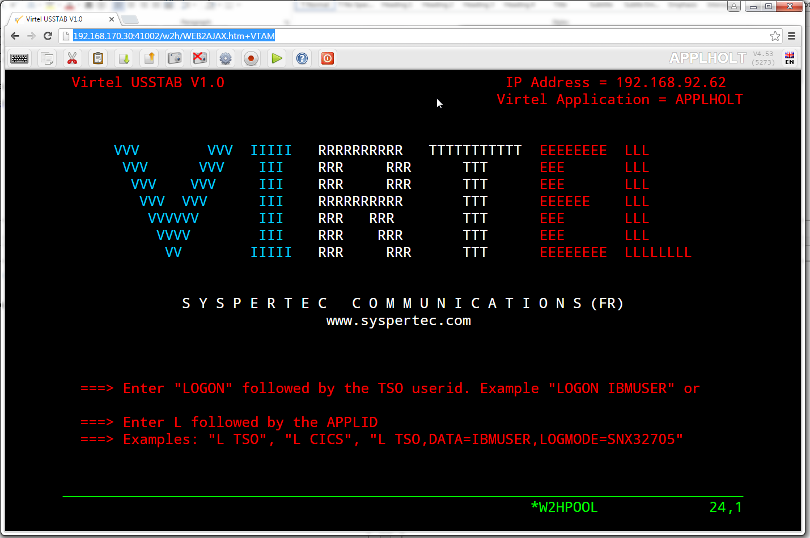
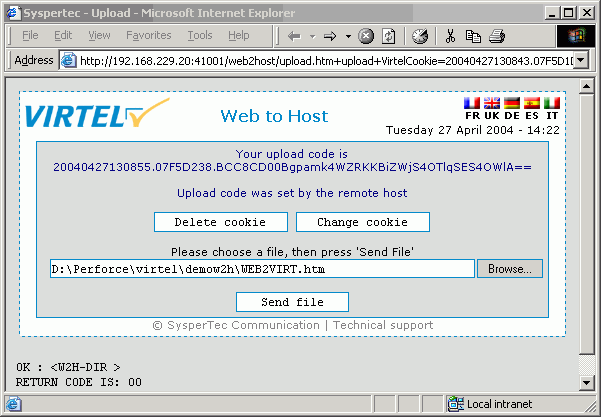
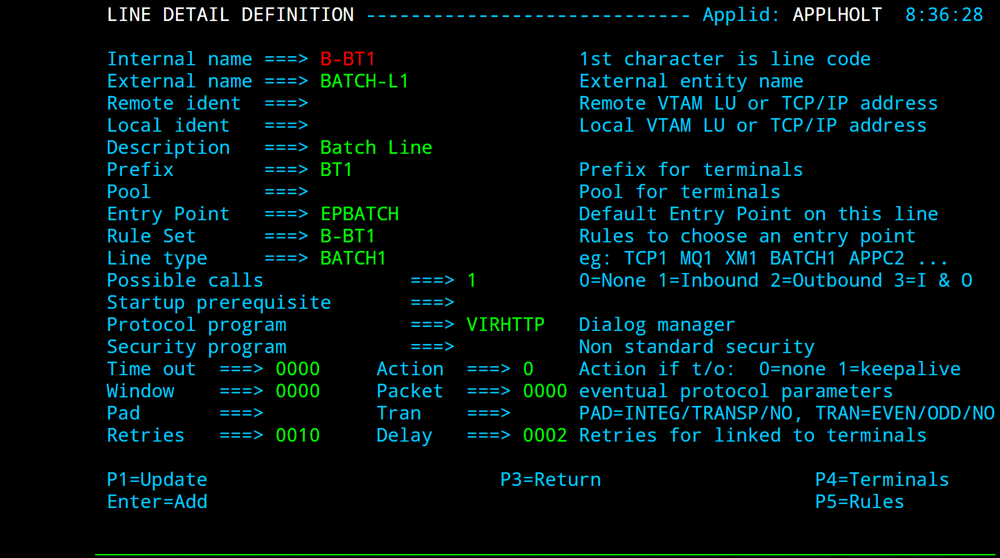
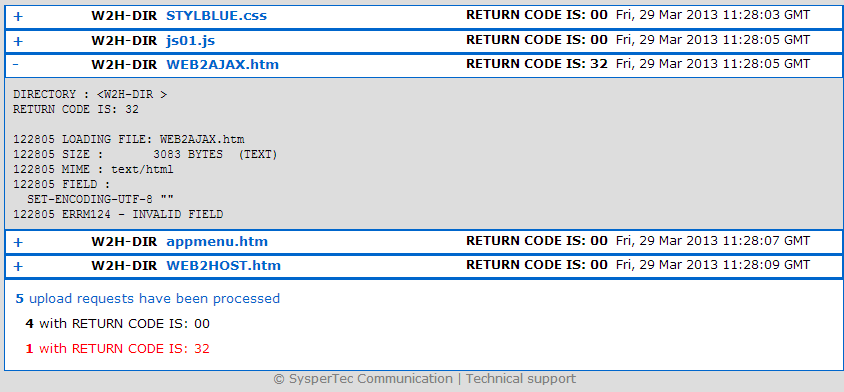
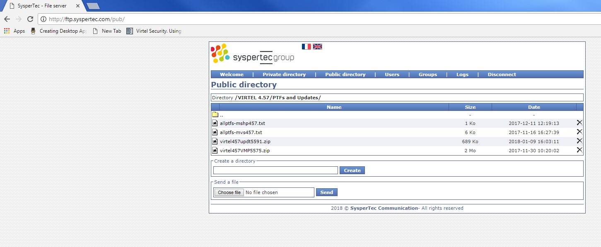
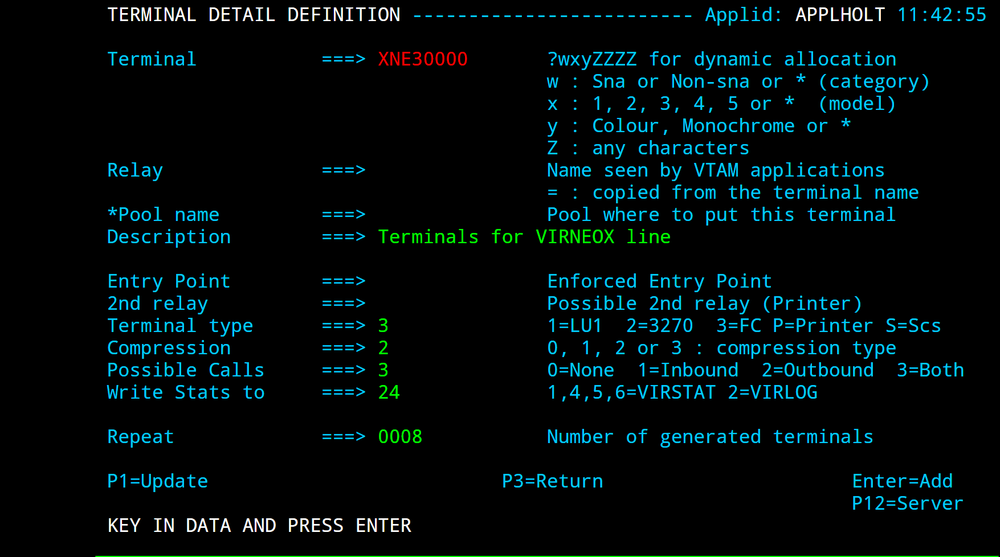
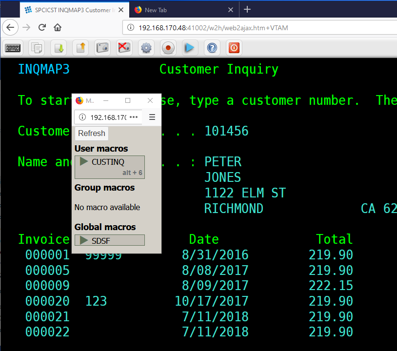
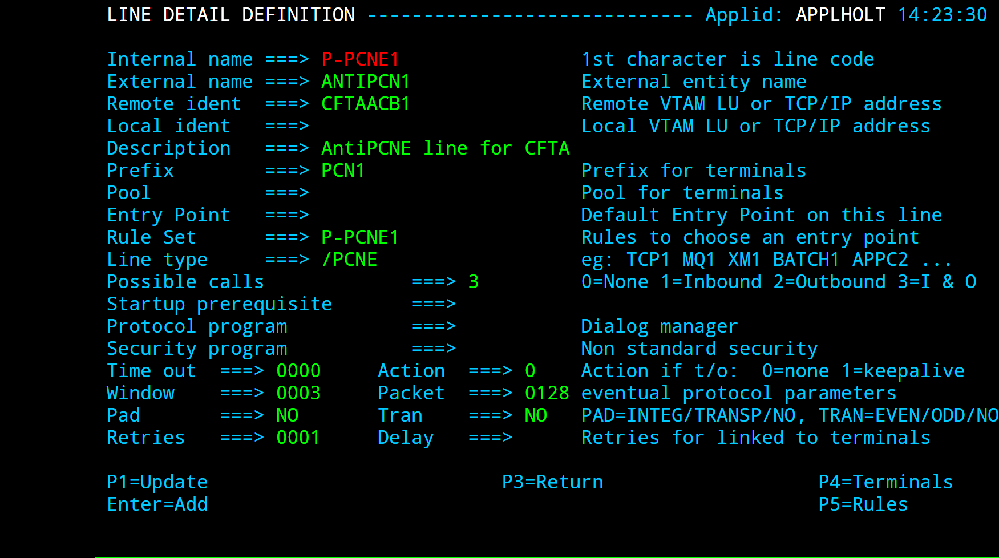
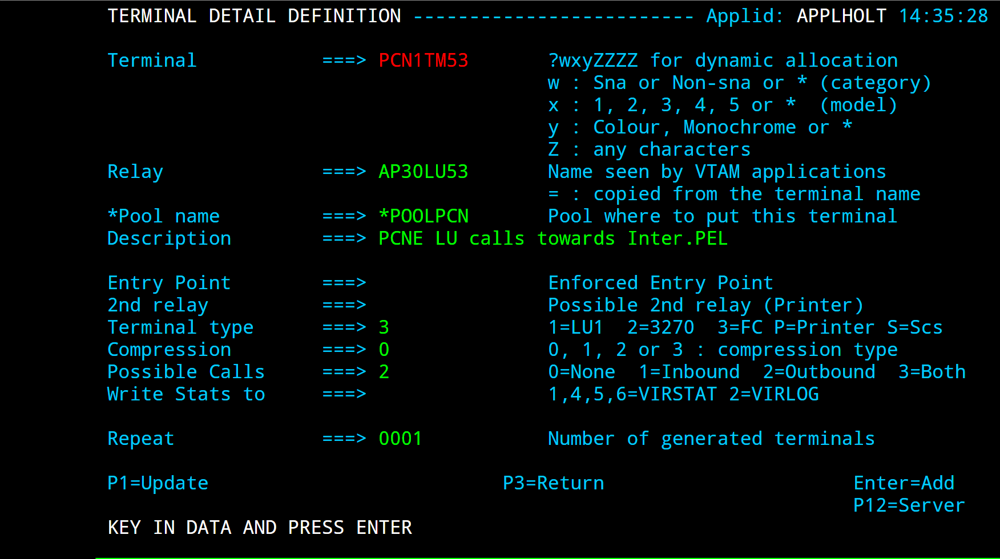
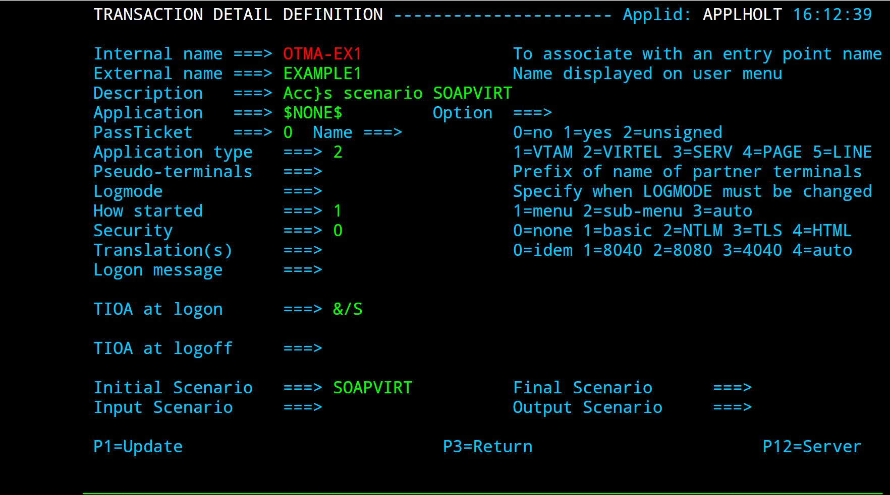

How To Guide V4.59¶

VIRTEL How to Guide
Warning
This is a draft version of the document.
Version : 4.59 Draft
Release Date : 27 October 2019. Publication Date : 27/10/2019
Syspertec Communication
196, Bureaux de la Colline 92213 Saint-Cloud Cedex Tél. : +33 (0) 1 46 02 60 42
Note
Reproduction, transfer, distribution, or storage, in any form, of all or any part of the contents of this document, except by prior authorization of SysperTec Communication, is prohibited.
Every possible effort has been made by SysperTec Communication to ensure that this document is complete and relevant. In no case can SysperTec Communication be held responsible for any damages, direct or indirect, caused by errors or omissions in this document.
As SysperTec Communication uses a continuous development methodology; the information contained in this document may be subject to change without notice. Nothing in this document should be construed in any manner as conferring a right to use, in whole or in part, the products or trademarks quoted herein.
“SysperTec Communication” and “VIRTEL” are registered trademarks. Names of other products and companies mentioned in this document may be trademarks or registered trademarks of their respective owners.
Summary of Amendments¶
Virtel version 4.59 (27th Oct 2019)¶
Note
For further details see the Virtel Technical Newsletter TN201902: Whats new in Virtel 4.59.
Customizing¶
Customization of Virtel can be implemented through customization of the following elements:
Custom CSS files, including Print Style CSS files.
Custom Javascript files.
Custom setting parameters.
Custom Help pages.
As delivered, Virtel provides a dummy settings member, W2HPARM.JS, which is located in both the W2H-DIR and CLI-DIR. Note that any customization should only be made to the CLI-DIR or any other customer directories. No changes should be made to the W2H-DIR as these changes will be lost during any Virtel upgrade or migration.
Levels of customization¶
Depending on how Virtel is implemented at a site will determine what level of customization is required. For most users, simple modification of the default settings may be all that is required. This can be achieved just by modifying the supplied dummy W2HPARM.JS in the CLI-DIR assuming that this is the only directory in use for any “user” transactions. The setting defaults are listed in Appendix A of the Virtel User Guide.
More complex installations may require different levels of customization invoking bespoke CSS and Javascript members. Furthermore, different customization levels may be required for different Entry points and underlying transactions. The “Option” level of customization meets these requirements.
Settings member W2HPARM.JS¶
The Virtel settings member is a JavaScript object consisting of a key:value construct. The key representing the Virtel setting and the value the associated setting. Note that a key value can be another object as is the case in the “global-settings” and “useVirtelMacros” values. Keys names are case sensitive - key “w2hparm” is different to “W2hparm”. Invalid keys name will be ignored by Virtel. Key names are enclosed in quotes when defined within the w2hparm object, for example:
var w2hparm = {
"ctrl":"Newline",
};
but if a property is defined outside of the object definition, no quotes are specified. For example:
w2hparm.ctrl = "Newline";
See Appendix A of the Virtel Users Guide for a full list of “key” names and associated default values.
Displaying customized members¶
To display a settings member use the following URLs as examples:
http://192.168.170.48:41002/w2h/w2hparm-js/w2hparm.js
Example of displaying the w2hparm.js member
To display a customized option member use the following URL:
http://192.168.170.48:41002/option/w2hparm.global.js
Example of displaying a global option member
Common settings member¶
If it is required that a common set of settings member be used for both W2H-DIR and CLI-DIR than a small modification to the W2H-DIR transaction, W2H-03P, is required. Changing the location directory from W2H-DIR to CLI-DIR will ensure that settings will be derived from the CLI-DIR W2HPARM.JS member. For example if you modify a key settings, which keyboard key reflects they “ENTER” key for example, than this change can used by both W2H and CLI transactions. An example of a modified W2H-03P transaction is displayed below:
Example of W2H-03P pointing at the CLI-DIR
The following JCL may also be used to modify the W2H-03P transaction.
Note
Virtel must not be running when using the VIRCONF program to update transactions:
// SET LOAD=SPTHOLT.VIRT459.LOADLIB
// SET ARBO=SPTHOLT.VIRT459.ARBO
//*
//CONFIG EXEC PGM=VIRCONF,PARM='LOAD,REPL',REGION=2M
//STEPLIB DD DSN=&LOAD,DISP=SHR
//SYSPRINT DD SYSOUT=*
//SYSUDUMP DD SYSOUT=*
//VIRARBO DD DSN=&ARBO,DISP=SHR
//SYSIN DD *
TRANSACT ID=W2H-03P,
NAME='w2h',
DESC='Directory for w2hparm.js',
APPL=CLI-DIR,
TYPE=4,
TERMINAL=DELOC,
STARTUP=2,
SECURITY=0,
LOGMSG='/w2h/w2hparm-js'
Global Options¶
Virtel implements a “global” option customized level whereby all customized elements apply to all transactions of a particular Entry Point. Each Entry Point may have its own “global” options. To implement global option customization, the W2HPARM.JS settings member is modified to contain a global settings object whose attributes point to members located in the options directory OPT-DIR.
var w2hparm = {
"global-settings":{
"pathToJsCustom":"../option/custJS.global.js",
"pathToCssCustom": "../option/custCSS.global.css",
"pathToW2hparm":"../option/w2hparm.global.js",
"pathToHelp": "../option/myHelp.html"
}
}
The “option” pathname is normally associated with the OPT-DIR. The directory is pointed to by the OPTION transaction CLI-03CO and by default is the CLI-DIR:
Example of option transaction
Each property of the global-settings object uses a “pathTo” property which has the following pattern:- “pathTo.key.id.type” where:
key = W2hparm | CssCustom | JSCustom | PrintCss | Help Case sensitive.
id = "global" or a transaction option identifier Option "id"
type = css | html | js Type
Global-settings object can contain the following pathTo properties:
"pathToJsCustom" - Customized JavaSCript elements
"pathToW2hparm" - Customized w2hparm parameters
"pathToCssCustom" - Customized CSS stylesheets
"pathToPrintCss" - Customized Print CSS Style sheets
"pathToHelp" - Customized Help pages
Restart Virtel after uploading the W2HPARM.JS and other global members. Refresh the cache then check that the correct settings are being used using the following URLs to list w2hparm.js and w2hparm.global.js:
http://192.168.170.48:41002/w2h/w2hparm-js/w2hparm.js
var w2hparm = {
"global-settings":{
"pathToW2hparm":"../option/w2hparm.global.js"
}
};
Example of w2hparm.js pointing to a global parm member
http://192.168.170.48:41002/option/w2hparm.global.js
The output from this display should show the DDI/Macros options that we used in compatibility mode.
var w2hparm = {"ctrl":"Newline",
"enter":"ENTER",
"pgup":"PA1",
"pgdn":"PA2",
"useVirtelMacros":{"macrosAutoRefresh":"session"}
};
w2hparm.keymapping=true;
Example of a wh2parm.global.js member
Transaction Options¶
Some transactions may require a different set of options or settings than those defined at the Entry Point or Global level. For example, certain transactions may have a modified tool bar containing a Printer Icon. Transactions which require such specific customization should have a unique option identifier or “Id” associated with the transaction definition. This “id” will pull in a different set of options “key”:”values” settings and will override the “global” settings. The option “id” will be used to associate customized elements against specific transaction(s).
In the following example the value “myOptions” has been chosen as an “id” for a particular transaction. A transaction level “core option file”, using the format “option.id.js”, will be used to locate they customized elements. In this example we are using a customized JavaScript member to add a “Printer Icon” to the Virtel Toolbar. Using the option “id” of “myOptions” a javascript file will be created called “option.myOptions.js”. This will be uploaded to CLI-DIR. Customized settings for transactions are held in a Javascript object called “oCustom”. Here is an example of the myOptions Javascript file:
//CLI-DIR - option.myOptions.js. Transaction level core option file
var oCustom={
"pathToJsCustom":"../option/custJS.myOptions.js"
}
Example of a core option file for customized JavaScript
This “”core option file” points to our customized JavaScript member for this transaction. This member contains the Virtel Javascript function “after_standardInit” which will be called after initialization to modify the standard Virtel tool bar:
//CLI-DIR - custJS.myOptions.js
//Add Print Button To Toolbar
function after_standardInit() {
addtoolbarbutton(000,"../print.ico","Print Screen",do_print);
}
function do_print() {
// do_print function
}
Example of customized Javascript element associated with a transaction
To support this customized transaction the following two files are uploaded to the OPT-DIR or options directory:
- ::
option.myOptions.js - core option file for identifier “myOptions”. Points to the custom javascript file for transactions which have option=myOptions set. custjJS.myOptions.js - customized java script file for “myOptions”.
Note
More than one transaction within an Entry Point can point to the same “id” option files.
Defining Transaction customization¶
The Virtel User Guide contains further information on how to use GUI based controls to create the necessary customization members and associated files for transaction customization. See the section “Defining Transaction Options” in the Customization section for further details.
Customizable JavaScript functions¶
Virtel provides the following Javascript functions that can be customized to give bespoke behavior:
after_standardInit
after_reponseHandle
Virtel Web Access¶
VWA User Interface¶
The VIRTEL Web Access user interface is in the form of a conventional 3270 screen divided into three areas:
The toolbar located in the upper of the screen contains the icons of functions (1), the information environment (2),the language selection (3).
The status line at the bottom includes the monitoring zone (4), particulars of the terminals associated with the session(5), mode and cursor position (6).
The area between the toolbar and the status bar is used to display the contents of 3270 screens, it can be of variable size between 24x80 and 62x132.
 The VWA 3270 screen areas
The VWA 3270 screen areas
Title¶
Add the User Name in the title Tab¶
You can add the User Name in the title tab by using the following order included in a custom.js file:
function after_responseHandle() {
document.title =document.body.className + “-“ + getUserId();
}
Example to add the User Name in the Title tab.
Toolbar¶
The toolbar is located at the top of the 3270 screen. It contains, icons, language selection tool and environment information. Some of those component can be removed, added or modified.
How to permanently hide the toolbar¶
The administrator may wish to prevent users from accessing features like copy/paste, print, and settings by removing correponding icons, or by hidding the toolbar. This example shows how to hide the toolbar using a custom.css file:
/* VIRTEL Web Access style sheet for site customization
* (c)Copyright SysperTec Communication 2007,2010 All Rights Reserved
*/
#toolbar {display:none;}
Example custom.css for hiding the toolbar
You can also use custom.js to remove icons individually from the toolbar, see “Removing unwanted toolbar icons” on page 11.
Let users hide/show the toolbar at their convenience¶
The administrator may want to let users hide/show the toolbar at their convenience:
/*
* Configuration to allow the user to manage show/hide toolbar by himself.
*/
w2hparm.switchToolBarDisplay = true;
Example w2hparm.js to allow users to manage the hide / show feature of the toolbar by themselves.
If this option is enabled, the “Alt + Insert” and “Alt + Home” keys present in the Key Mappings tab are enhanced with the “Toolbar” option. The user can then assign either of these two keys in order to to hide/show the toolbar at its convenience.

Key Mappings Setting Tab
These two assignments can also be predefined in the w2hparm.js file by using the commands:
/*
* Configuration to assign Alt+Insert and/or Alt+Home key to show/hide toolbar.
*/
"altins":"ToolBar" and/or
"althome":"ToolBar"
Example w2hparm.js to assign Alt+Insert and/or Alt+Home key to show/hide toolbar.
The toolbar can be automatically masked at each new session opening by using the following command in w2hparm.js
/*
* Configuration to automatically hide the toolbar when opening a new session.
*/
"hidetoolbar":"true"
Example w2hparm.js to automatically hide the toolbar when opening a new session.
Under Virtel 4.57, those features require update #5555 or above to be applied.
Showing / Hiding running version and maintenance level¶
On the right side of the toolbar, the running version and the level of maintenance of VIRTEL is shown. As this information is important and very helpful in case of troubleshooting, those information cannot be hidden except when the w2hparm.switchToolBarDisplay = true; feature is implemented and if the user hides the toolbar by themself.
Changing background color of the toolbar buttons¶
This example shows how to change the background color of the toolbar buttons by adding orders in the custom.css file:
/*
* VIRTEL Web Access style sheet customization the background of the toolbar
* buttons(c)Copyright SysperTec Communication 2014 All Rights Reserved
*/
|- transparent "at rest"
|- white when cursor moves on
|- yellow when button is clicked
#toolbar td .tbButton {
background-color: inherit;
}
#toolbar td .tbButton:hover {
background-color: white;
}
#toolbar td .tbButton:active {
background-color: yellow;
}
| To remove the background color and the border of buttons "at rest":
#toolbar td .tbButton {
background-color: inherit;
border: 1px solid transparent;
}
Example custom.css managing the background color of the toolbar buttons
Customizing the toolbar color by application¶
It is sometimes useful for the user to have a clear visual indication of which system he or she is logged on to. This example shows how to set the color of the toolbar to yellow for SPCICSP and pink for SPCICSQ.
/* VIRTEL Web Access style sheet for site customization
* (c)Copyright SysperTec Communication 2007,2010 All Rights Reserved
*/
.SPCICSP #toolbar {background-color:yellow;}
.SPCICSQ #toolbar {background-color:pink;}
Example custom.css for coloring the toolbar according to CICS region
 Web Access screen with yellow toolbar for SPCICSP
Web Access screen with yellow toolbar for SPCICSP
 Web Access screen with pink toolbar for SPCICSQ
Add a web link in the toolbar¶
You can add a web link in the toolbar by using the following order included in a custom.js file:
function after_standardInit() {
* Adds a button to the toolbar which performs a Google search
addtoolbarbutton(position, "http://www.yourtargetsit.com/favicon.ico",
"Title", linked_function);
}
Example to add a web link in the toolbar.
Example : Add a Google Search link in the toolbar¶
function after_standardInit() {
/*
* Adds a button to the toolbar which performs a Google search for
* the text selected in the red box in the 3270 screen, or for the
* word at the cursor if no box is drawn
*/
addtoolbarbutton(999, "http://www.google.com/favicon.ico",
"Search engine query", do_search);
}
function do_search() {
var searcharg = VIR3270.getBoxedText() || VIR3270.getWordAtCursor();
var windowname = "search";
var searchURL = "http://www.google.com";
if (searcharg) searchURL += "/search?q=" +
encodeURIComponent(searcharg.replace(/\s+/g, ""));
var windowopts = "location=yes,status=yes,resizable=yes," +
"scrollbars=yes,toolbar=yes,menubar=yes,width=640,height=480";
var searchwin = window.open(searchURL, windowname, windowopts);
if (searchwin) searchwin.focus();
}
Adding a company logo¶
This example shows how to display an icon (for example, a company logo) at the left of the toolbar:
/*
* VIRTEL Web Access style sheet customisation for company logo
* (c)Copyright SysperTec Communication 2012 All Rights Reserved
*/
#toolbar td#companyIcon {
height:30px;
display:table-cell;
}
#companyIcon div {
background-image:url("/w2h/virtblue.jpg");
background-position:0px -4px;
background-repeat:no-repeat;
height:26px;
width:145px;
}
Example custom.css for displaying company logo in the toolbar
This example shows how to replace the Virtel logo in the VIRTEL Web Access menu and the Application menu by your company logo:
/*
* VIRTEL Web Access style sheet for site customization
* (c)Copyright SysperTec Communication 2013 All Rights Reserved
* $Id$
*/
#appmenulogo {
background-image: url("mycompany.gif");
height: 65px;
width: 266px;
}
Example custom.css for replacing the Virtel logo by a company logo
Note
If no explicit path is given, the company logo will be loaded from the same directory as the custom.css file.
Toolbar Icons¶
Adding a toolbar icon¶
This example uses the after_standardInit function to insert additional icons into the toolbar when the session is started. Icons may subsequently be added or removed from the toolbar after each screen by means of the after_responseHandle function.
/*
* (c)Copyright SysperTec Communication 2012 All Rights Reserved
* VIRTEL Web Access customer-specific javascript functions
*/
/*
* Adds a button to the toolbar which performs a Google search for
* the text selected in the red box in the 3270 screen, or for the
* word at the cursor if no box is drawn
* after_standardInit() function must be implemented in a custom.js file
*/
function after_standardInit() {
addtoolbarbutton(999, "http://www.google.com/favicon.ico",
"Search engine query", do_search);
}
function do_search() {
var searcharg = VIR3270.getBoxedText() || VIR3270.getWordAtCursor();
var windowname = "search";
var searchURL = "http://www.google.com";
if (searcharg) searchURL += "/search?q=" +
encodeURIComponent(searcharg.replace(/\s+/g," "));
var windowopts = "location=yes,status=yes,resizable=yes,"+
"scrollbars=yes,toolbar=yes,menubar=yes,width=640,height=480";
var searchwin = window.open(searchURL, windowname, windowopts);
if (searchwin) searchwin.focus();
}
Example custom.js to customize the toolbar icons
Removing unwanted toolbar icons¶
This example uses the after_standardInit function to disable macro functions by removing the corresponding icons from the toolbar.
/*
* (c)Copyright SysperTec Communication 2017 All Rights Reserved
* VIRTEL Web Access customer-specific javascript functions
* after_standardInit() function must be implemented in a custom.js file
*/
function after_standardInit() {
/* Remove macro buttons from the toolbar */
removetoolbarbutton("startrecording");
removetoolbarbutton("playback");
}
Example custom.js to remove selected toolbar icons
The names of the other toolbar icons which can be removed in this way are:
capture,
disconnect,
document-print-preview,
edit-copy,
edit-cut,
edit-paste,
emptybuf,
file-rcv,
file-send,
help,
keypad,
playback,
printer,
settings,
settingsV2,
startrecording.
Note
(settingsV2 is présent only if w2hparms.js contains “settingsGUI”:{“version”:”V2”}, or “settingsGUI”:{“version”:”V1+V2”},)
To hide the toolbar completely, see “Hiding the toolbar” on page 6. To hide only the Virtel Application name, see “Showing / Hiding server information”, on page 15.
Removing file transfer icons¶
VIRTEL Web Access supports transfer of files between the browser and a TSO session using the IND$FILE protocol. The function is activated displayed only for the transaction defined with the SCENINDT scenario entered in Input and Output scenario fields. For some specific users, it may be necessary to remove the file transfer icons from the toolbar. This can be done by using the “removetoolbarbutton” function using the appropriate variable name.(See “Removing unwanted toolbar icons”, page 11.)
Removing macro icons¶
Icons for recording or executing a Macro are automatically present in the toolbar. To make them unavailable you should use the “removetoolbarbutton” function using the appropriate variable name.(See “Removing unwanted toolbar icons”, page 11.)
Positioning toolbar icons¶
In certain circumstances, the default position of an icon may not be at the user’s convenience. Is possible to change an icon’s position based on the position of another icon.
/*
* Customize the location of dynamic toolbar buttons.
* The calls to this function are ignored when they
* return nothing, or an integer not greater than 0.
*
* Customizable buttons IDs :
* > '3278T'
* > 'document-print-preview'
* > 'file-send'
* > 'file-recv'
* > 'printer'
*/
function customize_toolbarButtonIndex(id) {
if (id==='printer' || id==='document-print-preview') {
return getToolbarButtonIndex('disconnect') + 1;
}
}
Example custom.js to select a position for printer icon
Centering non standard icons¶
The best size for an icon is 32x32 pixels. For bigger or smaller icons, it possible to offer better center rendering in modifying the content of the class attribute passed within the “addtoolbarbutton” function in conjunction of using a specific css attribute.
/*
* (c)Copyright SysperTec Communication 2014 All Rights Reserved
* VIRTEL Web Access customer-specific javascript functions
* Resizing a too small or too big toolbar icon.
* For example toosmall_pic.png=22x22 and toobig_pic.jpg=145x30
*/
addtoolbarbutton(999, "/w2h/toosmall_pic.png", "Custom button #1 tooltip",
do_search, "tbButton size22x22");
addtoolbarbutton(999, "/w2h/toobig_pic.jpg", "Custom button #2 tooltip",
do_search, "tbButton size145x30");
Example custom.js to specify the toolbar icon size
/*
#toolbar td img.tbButton.size22x22 {
width: 22px;
height: 22px;
padding: 5px; /* padding is calculated to center the picture horizontaly
and verticaly in the 32x32 allocated area. (5+22+5 = 32) */
}
#toolbar td img.tbButton.size145x30 {
width: 145px;
height: 30px;
padding: 1px 0; /* padding is calculated to center the picture verticaly
in the 32x32 allocated area (1+30+1 = 32) without any horizontaly padding */
}
Example custom.css to manage a toolbar icon with a non standard size
Removing 3D/hover effects on the toolbar buttons¶
This example shows how to remove the 3D/hover effects on toolbar buttons by adding orders in the custom.css file:
/*
* VIRTEL Web Access style sheet customisation for removing 3D/hover effects
* (c)Copyright SysperTec Communication 2014 All Rights Reserved
*/
#toolbar td .tbButton,
#toolbar td .tbButton:hover,
#toolbar td .tbButton:active {
background-color: inherit;
border: inherit;
box-shadow: inherit;
}
Example custom.css for removing 3D/hover effects on buttons
File Transfer icons¶
The File Transfer icons are present in the toolbar only for access to TSO and if the transaction includes an INPUT and/or OUTPUT scenario with a call to the INDSCEN$ macro (See “TSO File Transfer” in “Virtel Web Access User Guide”).
Removing file transfer icons¶
VIRTEL Web Access supports transfer of files between the browser and a TSO session using the IND$FILE protocol. The function is activated displayed only for the transaction defined with the SCENINDT scenario entered in Input and Output scenario fields. For some specific users, it may be necessary to remove the file transfer icons from the toolbar. This can be done by using the removetoolbarbutton function using the appropriate variable name.(see “Removing unwanted toolbar icons”, page 11.)
Icon display troubleshooting¶
If some icons on the toolbar are displayed with some parasites on the border, please check that the browser is not in a zoom mode greater than 100%.
Background information¶
Adding custom text by application to the toolbar¶
Another way of providing a clear visual indication of which application the user is logged on to is to add a text label to the toolbar. In this example the text “MVS1” is displayed when logged on to application TSO1A, and “MVS2” is displayed for application TSO2A.
/*
* VIRTEL Web Access style sheet for site customisation
* (c)Copyright SysperTec Communication 2007,2010 All Rights Reserved
*/
.toolbarLast{
text-align: right; /* Text alignement */
}
.TSO1A .toolbarLast:before {
content: "MVS1";
opacity: 0.25;
font-size: 30px;
width: 100%;
z-index: 1000;
-webkit-text-stroke: 1px blue; /* Select color */
padding-right: 5px; /* To separate cells */
}
.TSO2A .toolbarLast:before {
content: "MVS2";
opacity: 0.25;
font-size: 30px;
width: 100%;
z-index: 1000;
-webkit-text-stroke: 1px red; /* Select color */
padding-right: 5px; /* To separate cells */
}
Example custom.css for adding custom text to the toolbar
 Web Access screen with custom text in the toolbar
Web Access screen with custom text in the toolbar
Adding application name to the toolbar¶
Another way of providing a clear visual indication of which application the user is logged on to is to add the application name label to the toolbar. In this example the text “TSO” is displayed when logged on to application TSO, and “SPCICSH” is displayed for application SPCICSH.
/*
* VIRTEL Web Access style sheet for site customisation
* (c)Copyright SysperTec Communication 2007,2010 All Rights Reserved
*/
.toolbarLast{
text-align: right; /* Text alignment */
}
.TSO .toolbarLast:before {
content: "TSO";
opacity: 0.25;
font-size: 30px;
width: 100%;
z-index: 1000;
-webkit-text-stroke: 1px red; /* Select color */
padding-right: 5px; /* To separate cells */
}
.SPCICSH .toolbarLast:before {
content: "SPCICSH";
opacity: 0.25;
font-size: 30px;
width: 100%;
z-index: 1000;
-webkit-text-stroke: 1px blue; /* Select color */
padding-right: 5px; /* To separate cells */
}
Example custom.css for adding custom text to the toolbar
 Web Access screen with custom application name in the toolbar
Showing / Hiding server informations¶
It is sometimes useful to have a clear visual indication of which server a user is logged on to, its version and the maintenance level applied on the system. By default, the value specified into the APPLID parameter of the VIRTCT is displayed at the top-right of the toolbar as shown below. This information is followed by the running version number and the Virtel Web access level of maintenance used. This last information is enclosed in parentheses.

The running version and the level of maintenance cannot be hidden, only the server name can be permanently removed by modifying the w2hparm.hideinfo attribut present in the customized w2hparms.js file:
/*
* Configuration of the server name connected to.
*/
w2hparm.hideinfo = true;
Example w2hparm.js for hiding the mainframe application name on which a user is connected to.
If the default value is preserved, the user can hide this information for his own usage by checking “Hide Virtel information in toolbar” in the Display tab of the settings panel.
Showing / Hiding running version and maintenance level¶
On the right side of the toolbar, the running version and the level of maintenance of VIRTEL is shown. As this information is important and very helpful in case of troubleshooting, those information cannot be hidden.
Language¶
Hide the Language Icon¶
You can hide the language icon by using the following orders included in a custom.css file:
#toolbar td#toolbar-lang { width: 1px; }
#toolbar td#toolbar-lang a { display: none; }
Example to hide the language icon
Assign a default language¶
You can force default language and leave to the customer the possibility to select another one if necessary by using the following order included in a custom.js file:
function after_standardInit() {
/* Will force default language to Croatian and will leave to the customer the possibility to select another one if necessary */
oVWAmsg.changeLang("hr");
}
Example to assign a default langage
Possible values for the language code are:
DE for Deutsch
EN for English
ES for Spanish
FR for French
HR for Croatian
IT for Italian
They must be entered in lower case.
Assign a permanent default language¶
You can force default language and not allow the customer to select another one. You can do it by using the following order included in a custom.js file:
function after_standardInit() {
/* Will force default language to Croatian and will not allow the customer to select another one if necessary */
oVWAmsgVWAmsg.restrictLanguages("hr");
}
Example to assign a permanent default language
Possible values for the language code are:
DE for Deutsch
EN for English
ES for Spanish
FR for French
HR for Croatian
IT for Italian
They must be entered in lower case.
Status bar¶
The status bar of the VWA user interface is located at the bottom and includes the monitoring zone (4), particulars of the terminals associated with the session (5), mode and cursor position (6).
The VWA 3270 screen’s areas
How to deactivate the Virtel status bar¶
To deativate the status bar create a ccs rule and add it to a custom css file. For example to deactivate it fo transactions associated with the iptions id “test1” create a “e in
//CLI-DIR - option.myOptions.css. Transaction level core option file
var oCustom={
"pathToCssCustom":"../option/custCSS.myOptions.css"
}
Example of a core option file for customized CSS file
This “”core option file” points to our customized CSS member for transactions which have the option=”myOptions” defined. This member contains a CSS style statement:
div#statusbar {display:none!important}
Example of customized CSS element
Relay and Printer name¶
Managing Relay and Printer name area¶
The area (5) of the VWA user interface contains information about the terminals used during the session. The name of the 3270 relay terminal is shown in the leftmost portion of the area while the name of the virtual printer terminal is shown in the rightmost portion of the area. The presence of a printer device is optional and depends on the terminal definition itself. The information in this area can be managed using the following functions:
Editing functions
vwaStatusBar.setRelay(“some txt”) to customize the 3270 relay area
vwaStatusBar.setPrintRelay(“some txt”) to customize the print relay area
Retrieval functions
vwaStatusBar.getRelay(P1) to retrieve the content of the 3270 relay area
vwaStatusBar.getPrintRelay(P1) to retrieve the content of the print relay area
For the retrieval function, if the value of the parameter P1 is “true” (without the double quotes), the information returned is the value of “Relay or Printer” as valued at the time the command executes. If the P1 is undefined or if its value is different from “true” the information returned is the value of “Relay or Printer” as existed at the time the page was sent by VWA to the browser.
Relay name area¶
You can manage the content of the relay name area by adding appropriate orders in after_responseHandle function.
/*
* (c)Copyright SysperTec Communication 2012 All Rights Reserved
* VIRTEL Web Access customer-specific javascript functions
*/
function after_responseHandle(httpXmlObj, url, xmitTimestamp) {
vwaStatusBar.setRelay(); // Clears relay field
vwaStatusBar.setRelay("Relay: " + // Adds some text
vwaStatusBar.getRelay()); // Get the relay name
}
Example custom.js to customize the content of the relay name area
Hide Relay name area content¶
You can hide the content of the realy name by replacing its content by spaces.
/*
* (c)Copyright SysperTec Communication 2012 All Rights Reserved
* VIRTEL Web Access customer-specific javascript functions
*/
function after_responseHandle(httpXmlObj, url, xmitTimestamp) {
vwaStatusBar.setRelay(); // Clears relay field
}
Example custom.js to hide the content of the relay name area
Printer name area¶
You can manage the content of the printer name area by adding appropriate orders in after_responseHandle function.
/*
* (c)Copyright SysperTec Communication 2012 All Rights Reserved
* VIRTEL Web Access customer-specific javascript functions
*/
function after_responseHandle(httpXmlObj, url, xmitTimestamp) {
vwaStatusBar.setPrintRelay(); // Clears printer field
vwaStatusBar.setPrintRelay("CICS printer: " + // Adds some text
vwaStatusBar.getPrintRelay()); // Get the printer name
}
Example custom.js to customize the content of the printer name area
Hide Printer name area content¶
You can hide the content of the printer name by replacing its content by spaces.
/*
* (c)Copyright SysperTec Communication 2012 All Rights Reserved
* VIRTEL Web Access customer-specific javascript functions
*/
function after_responseHandle(httpXmlObj, url, xmitTimestamp) {
vwaStatusBar.setPrintRelay(); // Clears printer field
}
Example custom.js to hide the content of the printer name area
Dynamic Directory Interface (DDI)¶
The Dynamic Directory Interface is intended for the administrator, to enable the users to deal with dynamic directories including those dedicated to various users and groups. The DDI application is accessible from the link “Dynamic directory interface” present in the main page associated with the Administration portal supported by the W-HTTP line.

Accessing the Dynamic Directory Interface
Lines¶
Starting and stopping a line¶
By default, a line is automatically initialized at Virtel startup, and is terminated when Virtel stops. In some cases, the handling of line initialization/termination needs to be managed differently: Initialization of a line is determined by the “Possible Calls” parameter of the line definition.

Line definition - Possible Calls Parameter
Initilaization through “Possible Calls” definition
A “Possible Calls” determines the possible direction of communication and can have one of four values:-
0 - No Calls
1 - Inbound Calls.
2 - Outbound Calls.
3 - Inbound and Outbound Calls.
If the value is 0 then the line is not initialized at Virtel start-up. It must be started manually. For values 1, 2, 3 the line is initialized automatically at Virtel start-up except for the cases below.
Initialization permanately completely inhibited
If the VIRTCT contains a parameter IGNLU that references the line, then this line shall not be initialized automatically at Virtel start-up. In this case it will no longer be possible to start this line manually after Virtel has started.
Conditional initialization of a line
It is possible to condition the initialization of a line to that of another line. This can be necessary for example when an application communicates with Virtel via MQ/Series, with one line that accepts inbound messages and another line that handles outbound messages. In this case, it is useful to wait until the communication with the partner has been established before accepting inbound messages.
LINE ID=M-MQ1, -
NAME=MQ-IN, -
LOCADDR=REQ.INPUT.QUEUE, -
DESC='MQ - REQUEST', -
TERMINAL=MQINT, -
ENTRY=MQINEP, -
TYPE=MQ1, -
INOUT=1, -
COND='MIMIC-LINE(M-MQO)', -
PROTOCOL=PREFIXED, -
RULESET=M-MQ1
LINE ID=M-MQ2, -
NAME=MQ-OUT, -
LOCADDR=REQ.OUTPUT.QUEUE, -
DESC='MQ - OUTPUT REQUETE', -
TERMINAL=MQOUT, -
TYPE=MQ1, -
INOUT=2, -
PROTOCOL=PREFIXED, -
RULESET=M-MQ2
Deferred initialization
The “Possible calls” field must be set to 0. The line may subsequently be started by a START command. It must not be referenced by an IGNLU parameter in the VIRTCT.
Virtel Line Commands
Using commands at the system console Lines can be used to start or stop a line by entering the appropriate command at the console. For further information on how to issue Virtel commands, see the Virtel “Audit, Operation And Performance” manuel.
LINE=linename,START (or L=linename,S)
LINE=linename,STOP (or L=linename,P)
**linename** - internal or external name of the line
The LINE START and LINE STOP commands perform the same function as using the “S” and “P” commands on the “Status of lines” application panel. These commands may only be issued for line types AntiGATE, AntiPCNE, AntiFASTC, and TCP/IP.
Terminal LU Nailing¶
When a user connects to a 3270 application through VIRTEL Web Access, VIRTEL makes it appear to the application as if the user is connecting from a virtual 3270 terminal. In VTAM terms a virtual 3270 terminal is called a Logical Unit or LU, and each LU has a unique eight character name (LU name). VIRTEL has at its disposal a pool of LUs known to VTAM, whose names are specified in the VIRTEL configuration file (the VIRARBO file). Normally when a user connects to a 3270 application, VIRTEL chooses any available LU from the pool. While most mainframe applications will accept a connection from any LU name, certain applications (particularly applications which run under IMS) are sensitive to the LU name because they assign permissions to the user based upon the LU name of the user’s terminal. LU nailing allows VIRTEL to assign a particular LU name to a user based upon the user’s IP address or upon a cookie presented by the user’s browser. In this section we describes the following types of LU nailing:
LU nailing by work station name
LU nailing by LU (Pre-defined terminal)
LU nailing by LU (Non-predefined terminal)
LU nailing by IP address
LU nailing by cookie
LU nailing by URL
LU nailing using the work station name (Predefined terminals)¶
In this example we use a batch job on the user’s PC to initiate a session with Virtel. The batch job obtains the terminal name of the work station, opens a browser window and passes the work station name through to Virtel. With a Virtel RULE we can test the name of the workstation and assign a particular relay LUNAME from a Virtel terminal POOL.
RULE ID=ESH0000, -
RULESET=E-HTTP, -
STATUS=ACTIVE, -
DESC='Rule for terminal EHPMA00', -
ENTRY=EDSWHOST, -
PARAM=EHPMA000, /* Or EHPMA00* */ -
NETMASK=255.255.255.255, -
USERDATA=(EQUAL,HOLT-W)
Example of a Virtel RULE to be activated with a user data
The rule instructs Virtel to test the user data field passed in a URL and if it matches the string POOL-W than to assign an LU name prefix of EHPMA00 and direct the terminal call to use an entry point of EDSWHOST. A static rule would have to be built for each unique work station name. The EDSWHOST entry point looks like:
ENTRY ID=EDSWHOST, -
DESC='EDS WEB ENTRY POINT (USERS WITH USERDATA)', -
TRANSACT=EDSW, -
TIMEOUT=0720, -
ACTION=0, -
EMUL=HTML, -
SIGNON=VIR0020H, -
MENU=VIR0021A, -
EXTCOLOR=X, -
ENDPAGE=CLOSE.HTM
In this entry point you would define the relevant transactions. In our case we have defined the following:
A transaction using EHLOC terminals to access the /w2h directory
A Virtel transaction using EHLOC terminals to support the application menu list
VTAM transaction using EHVTS terminal to establish a relationship with the VTAM application
TRANSACT ID=EDSW-00, -
NAME=EDSWHOST, -
DESC='HTML page directory (default access)', -
APPL=W2H-DIR, -
TYPE=4, -
TERMINAL=EHLOC, -
STARTUP=2, -
SECURITY=0
TRANSACT ID=EDSW-20, -
NAME='w2h', -
DESC='W2H toolkit directory (/w2h)', -
APPL=W2H-DIR, -
TYPE=4, -
TERMINAL=EHLOC, -
STARTUP=2, -
SECURITY=0
TRANSACT ID=EDSW-41, -
NAME=IMS, -
DESC='IMS access with userdata', -
APPL=IMS3270, -
PASSTCKT=0, -
TYPE=1, -
TERMINAL=EHVTS, -
STARTUP=1, -
SECURITY=0
TRANSACT ID=EDSW-42, -
NAME=TSO, -
DESC='TSO access with userdata', -
APPL=TSO, -
PASSTCKT=0, -
TYPE=1, -
TERMINAL=EHVTS, -
STARTUP=1, -
SECURITY=0
TRANSACT ID=EDSW-90, -
NAME='applist', -
DESC='List of applications for appmenu.htm', -
APPL=VIR0021S, -
TYPE=2, -
TERMINAL=EHLOC, -
STARTUP=2, -
SECURITY=1
In VTAM we would have the following definition:
* ------------------------------------------------------------------ *
* LU Test : VTAM application relays with user data. *
* ------------------------------------------------------------------ *
EHPMA000 APPL AUTH=(ACQ,PASS),MODETAB=ISTINCLM,DLOGMOD=SNX32702,EAS=1
Or for EHPMA00*
* ------------------------------------------------------------------ *
* LU Test : VTAM application relays with user data. *
* ------------------------------------------------------------------ *
EHPMA00? APPL AUTH=(ACQ,PASS),MODETAB=ISTINCLM,DLOGMOD=SNX32702,EAS=1
Example of VTAM APPL definitions
We also need a terminal and pool definition. Here is the pool definition:
TERMINAL ID=EHPMA000, -
RELAY=EHPMA000, /* Or EHPMA00* */ -
POOL=*STAPOOL, -
DESC='Terminal definition for EHPMA000', -
TYPE=3, -
COMPRESS=2, -
INOUT=3, -
STATS=26, -
REPEAT=
and a pool definition for out static pool:
TERMINAL ID=EHVTS000, -
RELAY=*STAPOOL, -
DESC='Static definition pool', -
TYPE=3, -
COMPRESS=2, -
INOUT=3, -
STATS=26, -
REPEAT=0010
This setup will support up to 10 predefined terminal definitions. For each terminal we have to provide a static definition. Of course we could have used a generic terminal definition of EHPMA00* but this would only work for numerically sequenced terminal names – EHPMA000 – EHPMA009. Getting the PC workstation name to Virtel is through a batch job which fires up the default browser and passes the work station name as a user data parameter. Here is an example:
title Test Propagation of Userdata Parameter
@echo on
color 1f
cls
SET P1=%COMPUTERNAME:~0,6%
start http://192.168.170.33:41003/w2h/appmenu.htm+applist+%P1% &goto:eof
:exit
Example of a batch job to pass the work station name
The SET command takes the first six characters of the work station name and passes it into the start command. Following the Virtel transaction I wish to execute which in this case is an APPLIST menu list. The start command will open a default browser window and connect to Virtel:

When a transaction is selected from the menu list the RULE will be invoked to allocate the correct LUNAME.

The Virtel RULE has forced an LU name prefixed EHPMA00* to be used from the the VIRTEL terminal pool associated with the Virtel line. In this case relay LUNAME EHPMA000 has been allocated. In the VTAM display we can see that a session has been set up using that LU name:
D NET,ID=EHPMA000,E
IST097I DISPLAY ACCEPTED
IST075I NAME = SPNET.EHPMA000, TYPE = DYNAMIC APPL 073
IST486I STATUS= ACT/S, DESIRED STATE= ACTIV
IST1447I REGISTRATION TYPE = CDSERVR
IST1629I MODSRCH = NEVER
IST977I MDLTAB=***NA*** ASLTAB=***NA***
IST861I MODETAB=ISTINCLM USSTAB=***NA*** LOGTAB=***NA***
IST934I DLOGMOD=SNX32702 USS LANGTAB=***NA***
IST1632I VPACING = 7
IST1938I APPC = NO
IST597I CAPABILITY-PLU ENABLED ,SLU ENABLED ,SESSION LIMIT NONE
IST231I APPL MAJOR NODE = APPLSPEH
IST1425I DEFINED USING MODEL EHPMA???
IST654I I/O TRACE = OFF, BUFFER TRACE = OFF
IST1500I STATE TRACE = OFF
IST271I JOBNAME = SPVIREH, STEPNAME = SPVIREH, DSPNAME = IST217EE
IST228I ENCRYPTION = OPTIONAL , TYPE = DES
IST1563I CKEYNAME = EHPMA000 CKEY = PRIMARY CERTIFY = NO
IST1552I MAC = NONE MACTYPE = NONE
IST1050I MAXIMUM COMPRESSION LEVEL - INPUT = 0, OUTPUT = 0
IST1633I ASRCVLM = 1000000
IST1634I DATA SPACE USAGE: CURRENT = 0 MAXIMUM = 0
IST1669I IPADDR..PORT 192.168.92.65..50027
IST171I ACTIVE SESSIONS = 0000000001, SESSION REQUESTS = 0000000000
IST206I SESSIONS:
IST634I NAME STATUS SID SEND RECV VR TP NETID
IST635I TSO1A005 ACTIV-P CA7B8B52114E7A85 0000 0002 SPNET
IST314I END
LU nailing using an LU name (Predefined Terminal)¶
Instead of passing a work station name in the user data field of the URL in this example we are passing an LU name. Again with a Virtel RULE we can extract the user data parameter from the URL and use that as the Virtel relay LUNAME name. For this example the rule looks like:
RULE ID=ESH0001, -
RULESET=E-HTTP, -
STATUS=ACTIVE, -
DESC='Rule for terminal EHPMA00', -
ENTRY=EDSWHOST, -
PARAM=$URL$, -
NETMASK=255.255.255.255
We use the special PARAM=$URL$ which indicates that the VTAM LU Name to be used is the user data passed in the URL.

The user data in the URL, in this case EHPMA00*, will be added to each transaction in the APPLIST menu and used as the Virtel relay LUNAME. When connecting to an application VIRTEL will use the LU name defined in the URL. In this example we are using a generic LUNAME (This could support a range from EHPMA000 through to EHPMA009
Lu Nailing using an LU Name (No predefined terminal)¶
Both of the above techniques require that a relay terminal be predefined for each terminal. For some installations this could be a maintenance headache and doesn’t scale up very well. Virtel provides a feature whereby predefined names are not necessary. In this next example we look at a technique that doesn’t require terminal predefinition. Virtel will grab a terminal entry from a pool and use the LU name passed in the URL as the relay LU name. To use this set-up certain conditions must be in place. Also note that no rules are required. Those definitions required are:
The HTTP Line must specify a pool name,
A pool name needs to be defined,
Transactions must specify $LINE$ in the “Pseudo-terminals” field.
Line definition

Pool definition for non-predefined LU Names

Transaction definition

Note
Note that the Pseudo-Terminal is defined as $LINE$. We have also assign a printer definition to this set-up. So if our LU relay name was HOLTWIN7 then our associated printer LU would be HOLTWINP.Accessing the transaction TSOF would be through the following URL forcing the relay LU NAME to HOLTWIN7. We would still have to define a terminal pool for DYNPOOL,but we avoid having to define individual terminal definitions, or ranges of, for every static terminals.

Lu Nailing using a cookie (Correspondent Sub Application)¶
Virtel also can use cookies to select a relay LU name. Virtel uses a cookie as a part of the “Correspondence Sub Application’. Within the cookie sent to Virtel is a security token. This token is used to identify a user and their associated VTAM LU relay name. A Correspondent file is used to maintain the user details. The cookie can be sent to the use as part of an Email from which the User selects a link to access Virtel or it can be part of the ‘self-registration’ process. For further information see Virtel – How to Activate LU Nailing.
LU Nailing by IP¶
This technique uses a rule to associate an IP address with an LU Name. The rule is associated with a line. In the example below we define a rule on line W-HTTP which will force a terminal connecting with IP address 192.168.000.039 to use LU name RHTVT001. The LU name must be pre-defined in a Virtel terminal pool. Multiple terminals can be defined with a rule by using the * suffix. In the following example a range of IP address is mapped to a pool of LU names. Address range 192.168.100.0 through to 192.168.100.255 will be assigned the next unused LU name in the range RHTVT1xx. The new rule is named WHT00140, the “IP Subnet” field specifies the IP address 192.168.100.000, and the “Mask” is set to 255.255.255.000 to indicate that only the first three octets of the IP address are tested to determine whether the rule matches the IP address of the client browser. The “parameter” field specifies a generic LU name RHTVT1* which signifies that any LU whose name begins with RHTVT1 may be assigned to clients whose IP address matches this rule.
Comparison Table
Rule defintion |
Terminal Definition |
Cookies Used |
|
|---|---|---|---|
Work Station Name in URL |
Yes. 1 per work station |
Yes. Individual or Group |
No |
LUNAME in URL |
Yes. 1 per work station |
Yes. Individual or Group |
No |
Using Forced LU |
No |
Pool Only |
No |
Correspondant |
Yes |
Yes |
Yes |
By IP |
Yes |
Yes |
No |
Transactions & Applications¶
Virtel Multi-session Within Virtel Web Access¶
In some situations, it is necessary to allow a group of users to simultaneously access several distinct 3270 applications. This can be solved by using the “appmenu.htm” associated with the “applist” transaction, or by using the 3270 Multi-session function of Virtel. In the first situation, for a same original calling terminal, Virtel uses as many relays as VTAM open sessions, in the second configuration, a single relay is used for all sessions, Virtel ensuring the swapping between the opened session. To access the Multi-session function of Virtel, you must define a transaction whose application name is the same as the main Virtel ACB name. This transaction is accessible in the same way as any other VTAM application. As the first screen shown is a signature screen, the transaction does not necessarily need to be secured. The lists of applications presented to the user depends on the selected parameter setting (See the Virtel Multi-session documented section for further information on this subject). Use of the multi-session Virtel module, even in a VWA context, requires an appropriate license agreement.

Transaction definition for the Virtel Multi-session module
How To Access A Host Application Directly¶
It is not always necessary to pass via an application selection menu to connect to a host application. A host application may be accessed directly by opening the URL containing the complete path to the application. This URL may result in the display of the host signon screen, the first application screen, or possibly (if a script or scenario is used), a subsequent screen sent by the application. For more information about how VIRTEL can be used to automate the process of connection to a host application, see Virtel URL formats in the Virtel Web Access Reference manual, and “Connection/Disconnection Scripts” in the VIRTEL Connectivity Reference manual.
Full path URL¶
For example, you can access the VIRTEL transaction whose external name is “Cics” by pointing the browser at a URL of the following format:
http://n.n.n.n:41001/w2h/WEB2AJAX.htm+Cics
At the end of the session with the host application, VIRTEL examines the “Last page” field (see previous section) to decide whether to return to the desktop or to redisplay the application selection menu.
Default URL for the entry point¶
An application URL may be coded in the “TIOA at logon” field of the default transaction for the entry point (the default transaction is the transaction whose external name is the same as the entry point name). This allows the user to go directly to the host application simply by entering a URL of the format:
http://n.n.n.n:41001
The example below shows the default transaction for the WEB2HOST entry point set up to go directly to the transaction whose external name is “Cics”:

Example of default URL
For more information see Virtel URL formats in the Virtel Web Access Users Guide.
How To Use Different Screen Sizes¶
Although the standard 3270 screen size is 24 rows by 80 columns, certain applications benefit from the use of terminals with larger screen sizes. The screen size is determined by the LOGMODE used for the session between VIRTEL and the host application. VTAM offers logmodes for the following standard screen sizes:
model 2 : 24x80 (logmode SNX32702)
model 3 : 32x80 (logmode SNX32703)
model 4 : 43x80 (logmode SNX32704)
model 5 : 27x132 (logmode SNX32705)
There are two different ways that the VIRTEL administrator can set up the configuration to allow the VIRTEL Web Access user to select the desired logmode:
Define a separate VIRTEL transaction for each screen size, and allow the user to select the appropriate transaction.
Group the VTAM relay LUs into pools, each pool having a different logmode, and allow the user to select the pool by coding an appropriate parameter on the URL.
LOGMODE defined by the transaction¶
With this method, the administrator defines multiple VIRTEL transactions for a single application, each transaction specifying a different logmode. For example, transactions Tso2 and Tso5 delivered in the sample configuration both define TSO as the target application, but specify different logmodes SNX32702 and SNX32705 respectively. The user selects the desired transaction from the applist menu displayed by the “Other applications” link in the VIRTEL Web Access menu.
The figure below shows the definition of the Tso5 transaction defined under the WEB2HOST entry point:

Example of TSO transaction TSO specifying logmode SNX32705
The URL to access this transaction could be of the format:
http://n.n.n.n:41001/w2h/WEB3270.htm+Tso5
Assigning a LOGMODE by URL parameter¶
The URL which allows the browser to connect to a host application via VIRTEL may contain a parameter, such as “model5” as shown in this example:
http://n.n.n.n:41001/w2h/WEB3270.htm+Tso+model5
This form of a VIRTEL URL is described in the section “Dynamic URL with user data”, page 1. This form of URL is processed by VIRTEL with reference to the “rule set” associated with the HTTP line. VIRTEL looks for a rule whose “User Data” field matches the value of the parameter (model5). The “Parameter” field of the selected rule assigns a relay LU name from the pool defined with logmode SNX32705. The VTAM definition of the relay pool is shown in the example below. In this example, LU names in the range RHTVT5nn are defined to have the model5 logmode SNX32705 :-
VIRTAPPL VBUILD TYPE=APPL
* ------------------------------------------------------------------ *
* RHTVTxxx : Relay for VTAM applications acceded by WEB to HOST *
* ------------------------------------------------------------------ *
* 3270 model 2 terminals
RHTVT0?? APPL AUTH=(ACQ,PASS),MODETAB=ISTINCLM,DLOGMOD=SNX32702,EAS=1
* 3270 model 5 terminals
RHTVT5?? APPL AUTH=(ACQ,PASS),MODETAB=ISTINCLM,DLOGMOD=SNX32705,EAS=1
VTAM definition of terminal groups
The screen below shows an example rule which assigns a relay LU from the range RHTVT5nn when the URL contains the parameter model5:
DETAIL of RULE from RULE SET: W-HTTP ------------- Applid: VIRTEL 17:15:15
Name ===> WHT00150 Rule priority is per name
Status ===> INACTIVE Mon, 24 Sep 2001 14:19:14
Description ===> HTTP access (with model5 URL parameter)
Entry point ===> WEB2HOST Target Entry Point
Parameter ===> RHTVT5* &1 value or LUNAME
Trace ===> 1=commands 2=data 3=partner
C : 0=IGNORE 1=IS 2=IS NOT 3=STARTS WITH 4=DOES NOT 5=ENDS WITH 6=DOES NOT
0 IP Subnet ===> Mask ===>
0 Host ===>
0 eMail ===>
0 Calling DTE ===> Calling DTE address or proxy
0 Called ===> Called DTE address
0 CUD0 (Hex) ===> First 4 bytes of CUD (X25 protocol)
1 User Data ===> model5
0 Days ===> M: T: W: T: F: S: S:
0 Start time ===> H: M: S: End time ===> H: M: S:
P1=Update P3=Return Enter=Add
P4=Activate P5=Inactivate P12=Entry P.
Example rule for selection of logmode by URL
The LU name (RHTVT5nn) assigned by the rule must belong to the LU pool shared assigned to the HTTP line, as shown in the example below :-
TERMINAL DETAIL DEFINITION ------------------------- Applid: VIRTEL 13:32:28
Terminal ===> W2HTP500 ?wxyZZZZ for dynamic allocation
w : Sna or Non-sna or * (category)
x : 1, 2, 3, 4, 5 or * (model)
y : Colour, Monochrome or *
Z : any characters
Relay ===> RHTVT500 Name seen by VTAM applications
= : copied from the terminal name
*Pool name ===> *W2HPOOL Pool where to put this terminal
Description ===> Relay pool for HTTP (3270 model 5)
Entry Point ===> Enforced Entry Point
2nd relay ===> RHTIM500 Possible 2nd relay (Printer)
Terminal type ===> 3 1=LU1 2=3270 3=FC P=Printer S=Scs
Compression ===> 2 0, 1, 2 or 3 : compression type
Possible Calls ===> 3 0=None 1=Inbound 2=Outbound 3=Both
Write Stats to ===> 12 1,4=VIRSTAT 2=VIRLOG
Repeat ===> 0020 Number of generated terminals
P1=Update P3=Return Enter=Add
P12=Server
Definition of model 5 terminals in the W2HPOOL pool
User-specified LOGMODE¶
When the entry point definition specifies SCENLOGM in the “Identification scenario” field, the user may override the default logmode by appending an additional parameter LOGMODE=modename to the URL, as shown in this example:
http://n.n.n.n:41001/w2h/WEB3270.htm+Tso?logmode=SNX32705
The source code for the SCENLOGM scenario is supplied in the VIRTEL SAMPLIB.
Note
To activate this functionality, SCENLOGM must be specified in the “Identification scenario” field of the ENTRY POINT (not the transaction definition).
Dynamic logmode with user-specified screen size¶
VIRTEL Web Access also supports the use of “dynamic” logmodes, such as D4A32XX3, which allow the user to specify a non-standard alternate screen size. When the entry point definition specifies SCENLOGM in the “Identification scenario” field, the user may also append ROWS and COLS parameters to the URL, as shown in this example:
http://n.n.n.n:41001/w2h/WEB3270.htm+Tso?logmode=D4A32XX3&rows=54&cols=132
VIRTEL allows a maximum screen size of 62 rows by 160 columns. The host application must also support the use of non-standard screen sizes.
Open session in separate tab¶
To open each session in separate tabs and keep the application menu available, add the following code in a “custom.js” file:
/* To open an application (issued from applist transaction) in a new TAB instead of the same window */
function before_launchApplink(href) {
return {
url: href, // Return received URL
target: '_blank' // Target is a new TAB
};
}
Example of Javascript code to open different sessions in separate tabs
Restrictions¶
Opening simultaneous sessions in different tabs imposes certain restrictions:
Browsers deliberately limit the opening of multiple simultaneous HTTP sessions on the same domain. This number varies depending on the browser itself and the version used. A detailed census is available on the BrowserScope website.
Each new session gives rise to the opening of a specific IP socket, and therefore the use of a separate relay terminal for each session. The LU Nailing is therefore not always possible or easy to implement in such situation.
How To Handle Host Session Termination¶
When the user terminates the application session by pressing the “Disconnect” button in the browser, various options are available: -
Return to the application selection menu
Display a specific HTML page
Close the browser window and return to the desktop
Remember that it is always best to exit cleanly from the host application by pressing the “Disconnect” button, rather than closing the browser window. If the browser window is closed abruptly, the host session resources may not be freed until the expiry of the time-out period specified in the entry point definition.
Displaying a specific page on disconnection¶
Those sites wishing to display a specific page at the end of a session may use the “Last page” field in the definition of the entry point associated with the HTTP line or the entry point selected by the rules of the line. The “Last page” field indicates the name of the page to be displayed following disconnection from the host application. The indicated file must be uploaded to the same directory as specified in the URL for the host application (for example W2H-DIR if the URL specifies /w2h/WEB3270.htm). The “Last page” may contain instructions to the user and may include system information provided by VIRTEL (such as the application and terminal name, date and time, etc.)
Closing the browser window automatically¶
Sites who wish to close the browser window and return to the desktop when the user disconnects from the host application may specify close.htm in the “Last page” field of the entry point definition. This page contains JavaScript code which will attempt to close the current browser window. Depending on the browser version and security settings, the window may close, a prompt may be issued, or the window may remain open. The close.htm page is delivered as standard in the W2H-DIR directory but may be copied to another directory if required. The figure below shows an example of an entry point definition with close.htm specified as the “Last page”:

Example of entry point with last page
Macros¶
Introduction¶
Virtel macros capture keystroke operations which can subsequently be used to automate 3270 functions. These user captured macros are stored within a file called MACROS.JSON. This file is a JavaScript array of JSON objects, with each object representing a user macro. Here is an example:
{"macros":[
{"name":"mylogon","rev":2,"def":[
{"txt":"sptholt"},"ENTER",
{"txt":"myPassword"},"ENTER","ENTER","ENTER"
],
"mapping":{"key":"ctrl","keycode":76}
},
{"name":"logoff","rev":1,"def":[
{"txt":"=x"},"ENTER",
{"txt":"logoff"},"ENTER"
],
"mapping":{"key":"ctrl","keycode":79}
},
{"name":"logon","rev":2,"def":[
"Tab","Down",
{"txt":"sptholx"},"ENTER",
{"txt":"password"},"ENTER","ENTER","ENTER"
],
"mapping":{"key":"alt","keycode":76}
}
],"fmt":2}
Macro modes¶
Local mode¶
All user macros are objects within a file called MACROS.JSON and with suitable knowledge this file can be maintained locally, known as local mode. The MACROS.JSON file is maintained through either the local macro interface, as launched by the user from the Virtel toolbar, or can be imported from a flat file where the MACROS.JSON file can be edited outside of these interfaces but this is not recommended unless you understand the macro structure and are familiar with JavaScript. By default Virtel maintains macros in local mode with the contents of the MACROS.JSON file being stored in the browsers local storage.
User Interface¶
Macro functions
You can capture and list macros by using the two macro ICON functions displayed in the Virtel tool bar. These are the red record/stop button and the green triangular play/display button. Green indicates local mode and will display the macros held in local storage.

The local storage record and play/display macro buttons
The record function is an on/off button that will record key strokes. When recording, the ICON will flash until it is clicked at which point it will stop recording and save the key strokes. A save panel will be displayed asking for the name of the macro entry. Note that an ENTER/PFK key must be pressed at least once, i.e. data must be sent by some key operation in order to create and save an entry within the macro.JSON file.

Creating a new macro
Keyboard mapping
When saving the macro you have the option of assigning a “hot key” or shortcut to the macro through keyboard mapping. Keyboard mapping can be a combination of ALT or CTRL keys and another keyboard key (F1 thru F12, A thru to Z, 1 thru 9). Beware that some keyboard combinations may be reserved for the operating system or Virtel functions. For example, CTRL-R is a browser refresh option. Allocating this combination as a hotkey will only invoke the refresh option and not the Virtel macro. Keyboard mapping is a feature that is turned on through a parameter in the w2hparm.js file. By default, keyboard mapping is set to false. To turn on keyboard mapping specify the following in the w2hparm.js member:
w2hparm.keymapping=true
With keyboard mapping enabled the macro interface will display the associated key mapping against the macro.

Saving a macro with keyboard mapping
Settings for macros
Although local macros will work “out of the box” most users would probably want to have the key mapping option set. To use this function the global options parameters must be customized to add the w2hparm.keymapping=true to the w2hparm options file. The following instructions can be used as an example as to how to set up global w2hparm customization for the CLI port 41002. Create the following two JavaScript members and upload them to the CLI-DIR directory:
var w2hparm = {
"global-settings":{
"pathToW2hparm":"../option/w2hparm.global.js",
}
};
w2hparm.js
- ::
w2hparm.keymapping=true;
w2hparm.global.js
These setup will use the customized w2hparms for CLI from the member w2hparms.global.js. The keymapping property has been set to true.
The Display Play/Display Button
The green triangular button will display the local storage macros. From here a context menu can be opened against each macro using the mouse right click. This will provide delete, edit, save as and run functions.

Displaying the local macros
Export and Import Options
Macros can be exported or imported using the Export and Import buttons. On export, the MACROS.JSON file will be created. If you plan to migrate to using the DDI option you will need to export the macros and then upload the relevant MACROS.JSON file through the DDI interface.
Centralised Macros - DDI mode¶
The MACROS.JSON file can be automatically downloaded from a centralized repository on the host through the Virtel Dynamic Directory Interface (DDI). This is known as remote or DDI mode. The browser’s local storage is synchronized, via a date stamp, with the centralized VSAM repository. Management of the centralised repository is through the DDI GUI interface accessed and managed by the Virtel Administrator within the Administration Portal, normally located via port 41001. In DDI mode the macro definitions are initially initialized through an imported MACROS.JSON file. The actual centralized repository normally resides within the HTMLTRSF VSAM file made up of user, group and global directories.
The advantage of maintaining macros in a central repository is that the administrator has control over the business logic defined by the macros and can also control who has access to them through Group, Global and User profiles. As part of their Virtel interface a user can now only access site controlled macros. Each user has access to three distinct levels of a macro - User, Group and global. A user’s user and group level are assigned based upon their corresponding security subsystem security profiles whereas all macros are available at the global level. A user can maintain macros at their user level.
Note
To use centralized DDI mode users have a userid and group defined within a security subsystem such as RACF.
Implementation¶
To use Centralised Macros users and Administrators must have “READ” access to the relevant DDI security resources. All transactions that use DDI must be defined with at least Security=1 (Basic Security) in order that the security context can be established for the user. Stop Virtel and run the following JCL to create these resources:
//STEP0 EXEC PGM=IKJEFT01,DYNAMNBR=20 COND=ONLY
//SYSTSPRT DD SYSOUT=*
//SYSTSIN DD *
/*-------------------------------------------------------*/
/* Directory Access */
/*-------------------------------------------------------*/
RDEF FACILITY SPVIREH.GLB-DIR UACC(NONE) /* Global Dir. */
PE SPVIREH.GLB-DIR CL(FACILITY) RESET
PE SPVIREH.GLB-DIR CL(FACILITY) ACC(READ) ID(SPGPTECH)
RDEF FACILITY SPVIREH.GRP-DIR UACC(NONE) /* Group Dir. */
PE SPVIREH.GRP-DIR CL(FACILITY) RESET
PE SPVIREH.GRP-DIR CL(FACILITY) ACC(READ) ID(SPGPTECH)
RDEF FACILITY SPVIREH.USR-DIR UACC(NONE) /* Global Dir. */
PE SPVIREH.USR-DIR CL(FACILITY) RESET
PE SPVIREH.USR-DIR CL(FACILITY) ACC(READ) ID(SPGPTECH)
/*-------------------------------------------------------*/
/* DDI / Capability */
/*-------------------------------------------------------*/
RDEF FACILITY SPVIREH.W2H-07 UACC(NONE) /* DDI */
PE SPVIREH.W2H-07 CL(FACILITY) RESET
PE SPVIREH.W2H-07 CL(FACILITY) ACC(READ) ID(SPGPTECH)
RDEF FACILITY SPVIREH.W2H-66 UACC(NONE) /* DDI */
PE SPVIREH.W2H-66 CL(FACILITY) RESET
PE SPVIREH.W2H-66 CL(FACILITY) ACC(READ) ID(SPGPTECH)
/*-------------------------------------------------------*/
/* Administrators Upload */
/*-------------------------------------------------------*/
RDEF FACILITY SPVIREH.W2H-80A UACC(NONE) /* Global Dir. */
PE SPVIREH.W2H-80A CL(FACILITY) RESET
PE SPVIREH.W2H-80A CL(FACILITY) ACC(READ) ID(SPGPTECH)
RDEF FACILITY SPVIREH.W2H-80G UACC(NONE) /* Global Dir. */
PE SPVIREH.W2H-80G CL(FACILITY) RESET
PE SPVIREH.W2H-80G CL(FACILITY) ACC(READ) ID(SPGPTECH)
RDEF FACILITY SPVIREH.W2H-80U UACC(NONE) /* Global Dir. */
PE SPVIREH.W2H-80U CL(FACILITY) RESET
PE SPVIREH.W2H-80U CL(FACILITY) ACC(READ) ID(SPGPTECH)
Security Resources required for DDI
Additional Virtel transactions and directories are required to support DDI. These can be implemented by running the ARBOLOAD job, located in the Virtel CNTL library, with VMACROS=YES. After executing this job start Virtel and access the Drag and Drop GUI from the Administration Portal on 41001. You should now see additional GRP-DIR, GLB-DIR and USR-DIR directories.

DDI Directories
Once the DDI directories are set up will can configure the necessary settings to invoke DDI. A w2hParm.global.js object is uploaded to the CLI_DIR and will contain the the DDI settings. We also need to ensure that our global-settings object is defined in the wh2parm.js member. The w2hparm.js in CLI-DIR looks like this:
// NOTE: this file is a sample and will be replaced after a new install.
// please see the documentation on possible parameter values
// and on how to set this file up in CLI-DIR instead of W2H-DIR
//
//var w2hparm = {};
var w2hparm = {
"global-settings":{
"pathToW2hparm":"../option/w2hparm.global.js"
}
};
Sample w2hparm.js setting
Our w2hparm.global.js member looks like the following example. This too is also uploaded to the CLI-DIR:
// w2hparm.global.js (CLI-DIR)
// w2h parameters to override defaults and add DDI macro support.
var w2hparm = {"ctrl":"Newline",
"enter":"ENTER",
"pgup":"PA1",
"pgdn":"PA2",
"useVirtelMacros":{"macrosAutoRefresh":"session"}
};
w2hparm.keymapping=true;
The “useVirtelMacros” is the key property required for DDI. The various values for this key name control the synchronisation between the user’s local macro storage and the DDI central repository. Specify one of the following options:
"w2hparm.useVirtelMacros":{“macrosAutoRefresh”: “never” | “once” | “daily” | “session” }
Macro Options
Option |
Description |
|---|---|
Never |
Do not synchronise with DDI unless the user presses the refresh button. Default |
Once |
Synchronise with DDI only when local storage hasn’t been initialised |
Daily |
Once a Day |
Session |
Every time a new browser session is opened |
Two other settings that can be used with DDI are: -
w2hparm.keymapping=true | false Turn on keymapping
This option turns on the ability to assign a macro with a shortcut or “hot key” made up of a combination of keys; such as ALT+F1, or CTRL+A. Beware that some keyboard combinations may be reserved for the operating system or other Virtel functions. For example, CTRL-R is a browser refresh option.
w2hparm.synchronizeVirtelMacros=true | false Synchronize all Centralised Repositories
If you are running multiple images of Virtel, say in a SYSPLEX arrangement using separate centralized repositories then the “synchronizeVirtelMacros” option should be set to true. This ensures that macro changes are reflected in all DDI repositories and associated local storage.
Centralised DDI validation¶
After uploading the settings objects stop and restart Virtel and then open a TSO or CICS session through the client port 41002.
http://192.168.170.48:41002/w2h/WEB2AJAX.htm+TSO
The macro ICON should now be blue, indicating centralised DDI has been correctly configured. In local mode this ICON is green.

Centralized DDI is active - ICON is blue
Pressing the Blue ICON should display an empty macro list:

Empty Macro list
Configuring the Centralised Repository
To configure the centralised DDI repository we need to create an “initial” MACROS.JSON file. If we load up a TSO or CICS transaction on the W2H line (41001) we can see that the Macro ICON is green, which is what we would also expect as DDI is not active on this port. We will use this line to create some initial macros to load up into our centralized repository on the mainframe. Remember, that in centralized DDI mode, macros are downloaded from the repository. Users do not have any capability of “writing” or exporting their own macros.
http://192.168.170.48:41001/w2h/WEB2AJAX.htm+Tso

Accessing a local macro facility - Green ICON
Creating an initial macro¶
SDSF test macro¶
In the next section we will create a macro, which performs a basic SDSF task in TSO, export it and then import it into the USR-DIR directory through the Centralised DDI import facility. We will use the non-DDI macro feature on port 41001 to create a test macro using the macro record button. The macro will be called SDSF. The following key sequences where entered from the ISPF primary option menu after logging on to TSO on line 41001:
Logon to TSO and bring up the ISPF primary menu panel.
Press Virtel macro record button [To the left of the green ICON]
=S Short cut to SDSF (This will be site dependant]
LOG SDSF Log command
Press Virtel macro record button again to cease recording.
The following panel should now pop up:

Creating a MACROS.JSON file
Saved the macro with the name SDSF. Now, press the Green ICON. The macro should appear in the local list and would have been saved to local browser storage. To run the macro press the green arrow to the left of the macro name SDSF.

Next, we need to create a “MACROS.JSON” file by exporting the SDSF macro we have just created.
Uploading macros to the centralized repository¶
To upload any MACROS.JSON file to the centralized repository we must first create a “local” export version. In the “Local Macros” popup export the SDSF macro using the export option. This will create a local “macros.json” file. The “MACROS.JSON” file will be exported to your default “download” directory on your PC.
If you view the file the following will be displayed:
{"macros":[
{"name":"SDSF","rev":1,"def":[61,115,"ENTER",108,111,103,"ENTER"]}
],
"fmt":2}
We now have a macro which we can import to the centralized repository. From the Administration portal, select the Dynamic Directory Interface option:

This will open the Dynamic directories main panel. Select the Global tab. The Global Drag and Drop area will be displayed. Drag the MACROS.JSON file from the “downloads” folder on to the Global D&D upload zone delineated by a dotted line. The MACROS.JSON file will be uploaded to the GLOBAL-DIR. The upload results will be shown on the D&D zone area.

Global DDI Upload
Refresh the GLOBAL directory by clicking the broken circled arrow in the top left of the screen. The MACROS.JSON file will be displayed. We can validate the Global macro upload by opening a TSO or CICS session with the DDI configured line (41002). Press the “Blue” ICON to display all available macros. It should now show that the SDSF macro has indeed been imported to the GLOBAL area.

Uploaded Global Macro
To run the macro, enter the ISPF primary menu and then press the Green “ARROW” next to the SDSF name. The SDSF log display should appear.
Creating a user macro¶
With centralized macros, users can create “local” macros which will by synchronized with the centralized repository. They will not have the ability to import/export any macro. Creating a “user” macro follows the same process as before. The user clicks the “record” button, records their macro, stops recording by pressing the record button again. As before, a popup window will open allowing the user to name the macro and associate with a “keyboard mapping” if that option has been set. The macro will then appear in the users list of macros.
Here is an example of a user macro called “CUSTINQ” which drives a sequence of CICS keyboard sequences to display a customer Inquiry panel within a CICS transaction. The macro has been associated with key mapping “ALT+6”.

Macro Options¶
Pressing the “right click” button against the macro name will reveal a small popup which provides the user with some options.

The user has the ability to “DELETE”, RENAME (“Save As”), EDIT or RUN the macro. Whatever changes are made will be synchronized with the central repository.
Note
The “Edit” feature is for viewing only.
Directory and Macro Administration¶
Users do not have the ability to create macros. This function is performed by the Virtel Administrator. The Administrator would develop macros using a “local” facility and export these up into the central repository to make them available to users at a Global, Group and User level.
Making a user’s DDI macro available to a DDI Group¶
The following procedure describes how to move a user’s DDI macro to a DDI GROUP level. Start by opening the DDI interface from the main Administration Portal and select the USER tab;specify the userid in the user name field. Press the Green tick. The macros associated with the userid will be listed.

Moving macros to a Group
Select the MACROS.JSON file. This file contains all the macros associated with this userid. Right click to reveal the options available - Valid options are EDIT, DOWNLOAD or DELETE. Note, the “COPY” option cannot be used to move MACRO.JSON files to another directory, such as GRP-DIR. To move the macro to GRP-DIR the MACRO.JSON must be downloaded and then uploaded, through the DDI upload interface, to the target group DDI zone.
Select the “DOWNLOAD” tab. The MACROS.JSON will be downloaded to the default download directory.
Now, select the GROUP TAB and specify the target RACF GROUP name. Press the GREEN tick. The GROUP directory for the group name will be displayed in a delineated DDI zone area. Select the MACROS.JSON file from the default download directory, or another directory where you might have a customised MACROS.JSON file, and drag it into the zone area, delineated by a row of dots. The macro will be uploaded to the selected GROUP.
If you now go to the TSO session under port 41002, the centralized DDI line, and list the macros by pressing the Blue ICON, you should see that the Group Macros now contains a list of macros. In our example it should be the macro CUSTINQ.

Populated Group macro
From this display you can see that the User Macro CUSTINQ has been moved to the Group area. The CUSTINQ macro can now be delete the user’s MACROS.JSON list using the DDI interface. To do this, enter the Administration Portal DDI interface, select the USERTAB, enter the userid into the username, press the Green tick to list the user’s MACROS.JSON file. Select the MACROS.JSON file, right click and press the DELETE tab. Confirm the deletion. The user’s MACRO.JSON fill will be deleted from the DDI USR-DIR directory and will no longer appear in the User macros list when listing the macros in the TSO session.
Note
Press the Refresh button after “deleting” the user macro.
 Deleting macros from user’s list
Deleting macros from user’s list
The process of moving macros between the various DDI levels, USER, GROUP and GLOBAL, can be applied using the procedure described above. You must “download” and then “upload” using the DDI drag and drop interface to move macros between levels. Also, remember that all macros are associated with a JSON file – MACROS.JSON. One such file will exist for each USER, GROUP and there will be only one global MARCOS.JSON file available to all users.
It is not recommended that you EDIT a downloaded MACROS.JSON file unless you have an understanding of JavaScript and JSON objects. It is better the use the online “EDIT” functions associated with the DDI interface or that of the Macro display list. Right click either against the MACROS.JSON file or the individual Macros listed in the TSO session will bring up the Editor function.
Dummy Macro File¶
It is not necessary to export a “dummy” macro from a “local mode” setup to get started. You can start with a dummy MACROS.JSON file and upload it to User, Group and Global levels. From there you can build up your MACROS.JSON files and upload them to the relevant User, Group and Global zones. A dummy macro file looks like:
{"macros":[],"fmt":2}
Dummy MACROS.JSON file
Centralized DDI Problems¶
Out of Sync condition or no transaction security¶
If the Virtel cache is out of sync with the DDI/macro settings or you are trying to access DDI macros using a non-secure transaction i.e. TRANSACTION SECURITY=0 then following page can appear when pressing the macro ICON:-

Out of Sync. Problem
Solution
Make sure you are using a transaction with security set.
Refresh the cache with the following commands.
CTRL-SHIFT-DEL CTRL R
Macro formats and Commands¶
The format of the MACROS.JSON file is an embedded JSON structure. Each name structure represents a keystroke macro identified by the “name” keyword.
Name : The name of the macro entry.
Rev : The “rev” is a user revision keyword.
Def : The “def” keyword identifies the commands and entry values.
The macro editor supports the following commands:- * “any string of characters to input into 3270 screen” * move(pos) * copy(startRow,startCol,endRow,endCol) * paste(pos) * paste(pos,nbRows,nbCols) * key(keyIdentifier)
Macro example
{"macros":[
{
"name":"SDSFLOG",
"rev":2,
"def":["move(435)","ENTER",{"txt":"=M"},"ErEof","ENTER",{"txt":"6"},"ENTER"]
},
{
"name":"SDSFDA",
"rev":1,
"def":[77,"ENTER",53,"ENTER",100,97,"ENTER"]
}
],"fmt":1}
Centralised User Parameters¶
Centralized USERPARM provides the ability to save user settings in a centralized VSAM file on the mainframe. The user settings with be synchronized with the browser whenever a user logs on, regardless of the device they are using. Users must have a RACF or equivalent userid.
USERPARM Setup¶
1 Stop Virtel. Update the TCT with the following definitions and re-assemble using the ASMTCT JCL found in the CNTL library.
UPARMS=(USERPARM), * UFILE3=(USERTRSF,ACBH3,0,10,01), * ACBH3 ACB AM=VSAM,DDNAME=USERTRSF,MACRF=(SEQ,DIR,OUT), * STRNO=3
2 Run HLQ.VIRTxxx.SAMPLIB(USERPARM)
You will need to modify the JCL before running the Job. This job will allocate the USERTRSF VSAM file which will be the repository for user parameters.
3 Update RACF to support the USERPARM transactions
The following security definitions will be needed to support the USERPARM feature. For example, for RACF the following FACILITY profile definitions need to be added and users given READ access.
//STEP1 EXEC PGM=IKJEFT01,DYNAMNBR=20 //SYSTSPRT DD SYSOUT=* //SYSTSIN DD * RDEF FACILITY VIRTEL.USERPARM UACC(NONE) /* DIRECTORY */ PE VIRTEL.USERPARM CL(FACILITY) RESET PE VIRTEL.USERPARM CL(FACILITY) ACC(READ) ID(SPGPTECH) RDEF FACILITY VIRTEL.W2H-74 UACC(NONE) /* UPLOAD */ PE VIRTEL.W2H-74 CL(FACILITY) RESET PE VIRTEL.W2H-74 CL(FACILITY) ACC(READ) ID(SPGPTECH) SETR REFRESH RACLIST(FACILITY)
4 Update the VIRTEL procedure
Add the USERTRSF JCL statement to the Virtel procedure. For example :
//USERTRSF DD DSN=&QUAL..USER.TRSF,DISP=SHRRestart Virtel
5 Perform a USERPARM sanity check
A ‘sanity check’ template is provided to validate the USERPARM environment at the transaction level. For example:-
http://192.168.170.48:41002/w2h/checkCentralizedSettings.htm+TSOIf every has been configured correctly you should get a “GREEN” light.

Example of a Sanity Check after setting up USERPARM
Testing the USERPARM feature¶
To test the USERPARM feature follow the procedure below :-
1 Logon to a 3270 application, say TSO 2 Open the settings dialog 3 Change the “Display Style” to Grey and save. The background colour should change to grey. 4 Disconnect from Virtel using the Red button in the tool bar. 5 Reconnect to Virtel, using a different browser and open a 3270 session. 6 The background colour should still be set to grey. 7 Open the settings dialogue and confirm that Grey button is still highlighted.
In the Virtel log you should see the following “upload” message:-
VIRU122I CLVTA079 FILE UPLOAD : ENTRY POINT 'CLIWHOST' DIRECTORY 'USERP 882
ARM' USER 'SPTHOLT '
FILE : '8393DD4A16F0E1C9723F9D9CFA2C39F1'
Removing a user’s settings¶
This can be done by deleting the key associated with the user from the USERPARM directory. For example, the key associated with SPTHOLT is C6D24022819C599803A86BB3C42298B6. If we look at USERPARM directory in the Administration portal on line 41001 we can see it listed:

Listing the USERPARM directory
We can remove the entry by using the delete option. This will remove any user settings. The user will then have to “restore defaults” to correctly pickup up the default user parameters as defined by the Administrator.
USERPARM Problems¶
When I try to save my settings, I get the following dialog box and the following messages in the Virtel log.
VIRU122I CLVTA079 FILE UPLOAD : ENTRY POINT 'CLIWHOST' DIRECTORY 'USERP
330
ARM' USER 'SPTHOLT '
FILE : '9346CCEF695D8FF2D7C1B2DA6C81CFC8'
VIRC121E PAGE NOT FOUND FOR CLVTA079 ENTRY POINT 'CLIWHOST' DIRECTORY '
331
W2H '(W2H-DIR W2H-KEY )
PAGE : 'VPLEX=UNDEFINEDPARAMETERS-CODE.TXT' URL : '/w2h/VPLEX=un
definedPARAMETERS-CODE.txt++AjaxSession=ADvzWAAAAAAeu
Userparm Error
Solution
Apply the latest maintenance. You must be at UPDT5708 or higher.
Problem
I save my user parameter changes but when I use a different PC or browser I am reverted back to my old or default settings.
Solution
Check the Virtel log and look for any RACF violations that may be preventing a user from uploading their user parameters definitions to the mainframe repository. In the console log you may well see RACF error messages:
ICH408I USER(CTKHOLT ) GROUP(CTKGROUP) NAME(ED HOLT ) 451
SPVIREH.USERPARM CL(FACILITY)
INSUFFICIENT ACCESS AUTHORITY
ACCESS INTENT(READ ) ACCESS ALLOWED(NONE )
VIRU121E CLVTA079 FILE UPLOAD FAILED : ENTRY POINT 'CLIWHOST' DIRECTORY
452
'USERPARM' USER 'SPTHOLT '
FILE : 'C6D24022819C599803A86BB3C42298B6'
Solution
Check the correct RACF security is in place.
Problem
Changed defaults not updated in another browser session.
Solution
This is normally related to configuration. Try the “sanity” URL test to make sure that the setup is correct for the line in use.
Security¶
How To Activate SSL Using AT-TLS¶
To provide secure HTTP (https) sessions to client browsers, VIRTEL uses the Application Transparent Transport Layer Security (AT-TLS) feature of z/OS Communication Server. AT-TLS is included with z/OS V1R7 and later releases. AT-TLS allows socket applications to access encrypted sessions by invoking system SSL within the transport layer of the TCP/IP stack. The Policy Agent decides which connections are to use AT-TLS, and provides system SSL configuration for those connections. The application continues to send and receive clear text over the socket, but data sent over the network is protected by system SSL. The supported protocols are TLS, SSLv3, and SSLv2.
Installation steps¶
Install Policy Agent procedure¶
If you do not already have the Communications Server Policy Agent (PAGENT) active in your z/OS system, copy the cataloged procedure EZAPAGSP from TCPIP.SEZAINST into your proclib, renaming it as PAGENT.
Create the Policy Agent configuration file¶
If you do not already run the Policy Agent, you will need to create a configuration file /etc/pagent.conf using z/OS Unix System Services. If you already run Policy Agent, you will need to find the existing configuration file and add the TTLS definitions to it. Step PCONFIG in the SSLSETUP sample job contains a starter configuration. The following changes should be made:
Replace %virtjob% by the name of your VIRTEL started task (SSLSETUP line 70)
Replace 41000-41002 by 41002 in the LocalPortRange parameter (SSLSETUP line 71) to activate AT-TLS for VIRTEL line C-HTTP
Replace ServerWithClientAuth by Server in the HandshakeRole parameter (SSLSETUP line 82) as we will not be using Client Certificates.
Allow the Policy Agent to run during TCP/IP initialization¶
The Policy Agent must be given READ access to the resource EZB.INITSTACK.* in RACF class SERVAUTH. See step EZBAUTH in the SSLSETUP sample job (delivered in VIRTEL SAMPLIB).
Create the server certificate¶
A server certificate for VIRTEL must be created, signed by a certificate authority, and stored in the RACF database. In the SSLSETUP sample job we create a signing certificate and use RACF itself as the certificate authority. Alternatively, you may use an external certificate authority such as Verisign to create and sign the certificate, then import it into RACF. At SSLSETUP line 228, replace %virtssl% by the DNS name assigned to the VIRTEL host (for example, virtssl.syspertec.com)
Add the certificate to the keyring¶
The server certificate must be added to the VIRTRING keyring. See step CCERTIF in the SSLSETUP sample job.
Allow VIRTEL to access its own certificate¶
To allow VIRTEL to access its own keyring and server certificate, the VIRTEL started task must have READ access to the resource IRR.DIGTCERT.LISTRING in the RACF class FACILITY. See step IRRAUTH in the SSLSETUP sample job.
Activate AT-TLS¶
To activate AT-TLS, add the following statements to TCPIP PROFILE:
TCPCONFIG TTLS
AUTOLOG 5 PAGENT ENDAUTOLOG
Stop and restart TCP/IP to activate the TCPCONFIG TTLS profile statement. The AUTOLOG statement will cause the PAGENT procedure to be started automatically during TCP/IP initialization.
Operations¶
Starting the Policy Agent¶
The AUTOLOG statement in the TCP/IP profile will start the PAGENT procedure automatically at TCP/IP initialization. Alternatively you can issue the MVS command S PAGENT. Note: if this is the first time you have activated the SERVAUTH class, you are likely to see RACF failure messages during TCP/IP initialization indicating that other applications are unable to access the resource EZB.INITSTACK. This is normal, because Communications Server uses this mechanism to prevent applications from accessing TCP/IP before the Policy Agent is started. Do not be tempted to authorize applications to use this RACF resource. Either ignore the messages (they will go away once PAGENT has started), or ensure that PAGENT starts before all other applications.
Altering the Policy Agent configuration¶
To make changes to the Policy Agent configuration file, either edit and resubmit the PCONFIG step of the SSLSETUP sample job, or use the TSO ISHELL command to edit the file /etc/pagent.conf directly from ISPF. After you make changes to the Policy Agent configuration, use the MVS command F PAGENT,REFRESH to force PAGENT to reread the file.
Logon to VIRTEL using secure session¶
To access VIRTEL line C-HTTP you must now use URL https://n.n.n.n:41002 instead of http://n.n.n.n:41002 (where n.n.n.n is the IP address of the z/OS host running VIRTEL).
Problem determination¶
Policy Agent log file¶
Policy Agent startup messages are written to the /tmp/pagent.log file of z/OS Unix System Services. You can use the TSO ISHELL command to browse this file from ISPF.
Common error messages¶
Error messages relating to session setup are written to the MVS SYSLOG. The most common error message is:
EZD1287I TTLS Error RC: nnn event
where nnn represents a return code. Return codes under 5000 are generated by System SSL and are defined in the System SSL Programming manual. Return codes over 5000 are generated by AT-TLS and are defined in the IP Diagnosis Guide. Some commonly encountered return codes are:
7 No certificate
8 Certificate not trusted
109 No certification authority certificates
202 Keyring does not exist
401 Certificate expired or not yet valid
402 or 412 Client and server cannot agree on cipher suite
416 VIRTEL does not have permission to list the keyring
431 Certificate is revoked
434 Certificate key not compatible with cipher suite
435 Certificate authority unknown
5003 Browser sent clear text (http instead of https)
Cipher suite¶
The client and server cipher specifications must contain at least one value in common. The TTLSEnvironmentAdvancedParms parameter of the Policy Agent configuration file allows you to turn on or off the SSLv2, SSLv3, and TLSv1 protocols at the server end. The list of supported cipher suites for each protocol is in the TTLSCipherParms parameter. Check the /tmp/pagent.log file to determine whether any cipher suites were discarded at startup time. In Microsoft Internet Explorer, follow the menu Tools – Internet Options – Advanced. Under the security heading there are three options which allow you to enable or disable the SSL 2.0, SSL 3.0, and TLS 1.0 protocols. You cannot enable or disable individual cipher suites. In Firefox the cipher specifications are accessed by typing about:config in the address bar and typing security in the filter box. By default, ssl2 is disabled, and ssl3 and tls are enabled. By default, all weak encryption cipher suites are disabled, and 128-bit or higher cipher suites are enabled.
Bibliography¶
SA22-7683-07 z/OS V1R7 Security Server: RACF Security Administrator’s Guide Chapter 21. RACF and Digital Certificates
SC24-5901-04 z/OS V1R6 Cryptographic Services: System SSL Programming Chapter 12. Messages and Codes
SC31-8775-07 z/OS V1R7 Communications Server: IP Configuration Guide Chapter 14. Policy-based networking Chapter 18. Application Transparent Transport Layer Security (AT-TLS) data protection
SC31-8776-08 z/OS V1R7 Communications Server: IP Configuration Reference Chapter 21. Policy Agent and policy applications
GC31-8782-06 z/OS V1R7 Communications Server: IP Diagnosis Guide Chapter 28. Diagnosing Application Transparent Transport Layer Security (AT-TLS)
SC31-8784-05 z/OS V1R7 Communications Server: IP Messages: Volume 2 (EZB, EZD) Chapter 10. EZD1xxxx messages
SSL - Signing On Using Server And Client Certificates¶
In this section we look at setting up Virtel to work with client and user certificates and to effectively remove the need for a user to provide a user id and password. This is equivalent to the Express Logon Feature (ELF) provided by Host on Demand and other Telnet clients. First, let’s review what is going on behind the scenes with certificate authentication and X.509 certificate validation within TLS/SSL. The guiding principle here is that Public Key Infrastructure (PKI) requires that data encrypted with a public key can only be decrypted with a private key and data encrypted with a private key can only be decrypted with a public key. The secure session (https) that runs between the browser and Virtel uses the Application Transparent Transport Layer Security feature of z/OS Communications Server, also known as AT-TLS. AT-TLS allows socket applications to access encrypted sessions by invoking Secure Socket Layer (SSL) within the transport layer of the TCP/IP stack. A policy agent (PAGENT) is used to configure AT-TLS using parameter statements which will determine which sessions are to use AT-TLS. AT_TLS inserts itself in the connection between the application and browser. This means that the application will send and receive clear text over the socket interface, but data over the network is encrypted by system SSL. System SSL has three supported protocol levels:
TLSv1
SSLv2
SSLv3
In this configuration we will be using SSLv3. The server / client process, which in Virtel’s case is the Virtel started task (server) and the browser (client), implements the following SSL protocol or handshake during the “hello” phase of establishing a secure session:
The Client contacts the Server ;
The Server sends a certificate;
Server authentication is performed by the Client ;
Client sends the certificate;
Client authentication is performed by the Server ;
An encryption algorithm and single key is chosen to encrypt / decrypt data The purpose of the authentication is to ensure that the server/client are in fact who they say they are. This is to ensure that they server/client private and public keys haven’t been stolen and are purporting to be an entity that they aren’t and thereby compromising security. Authentication uses X.509 digital certificates. Further details of this handshake and the certificate exchange can be found in Appendix B. TLS/SSL Security z/OS Communications Server: IP Configuration Guide.
Certificates¶
What’s in a X.509 certificate?¶
Amongst other things it includes the Distinguished Name of the Server (DNS), the public key of the Server, Distinguished Name of the Server organization issuing the certificate and the issuer’s signature. If we look at a certificate held with RACF we can see this information. Certificates are identified by a combination of LABEL, USERID or Certification Authority (CA).
READY
RACDCERT ID(SPVIRSTC) LIST(LABEL('VIRTEL SSL DEMO'))
Digital certificate information for user SPVIRSTC:
Label: VIRTEL SSL DEMO
Certificate ID: 2Qji1+XJ2eLjw+XJ2ePF00Di4tNAxMXU1kBA
Status: TRUST
Start Date: 2014/07/08 00:00:00
End Date: 2015/07/08 23:59:59
Serial Number:
>05<
Issuer's Name:
>CN=z/OS Security Server.O=SYSPERTEC.C=FR<
Subject's Name:
>CN=RECETTE VIRTEL.T=VIRTEL Web Access.O=SYSPERTEC.C=FR<
Key Usage: HANDSHAKE, DATAENCRYPT
Key Type: RSA
Key Size: 1024
Private Key: YES
Ring Associations:
Ring Owner: SPVIRSTC
Ring:
>VIRTRING<
Similar details can be found in the browser settings. For example here is what Chrome displays in the HTTPS/SSL certificate database.

Types of certificates¶
Client certificate
Server certificate
Well-known Certificate Authority (CA) Signing certificate
RACF signing certificate
In this configuration we will be using self-signed server and client certificates. In most installation you would use server and client certificates signed by a well-known CA. These well-known CA certificates are normally available in the RACF and browser key data bases.
Configuring the certificates¶
The first step is to create the necessary certificates. We require a server certificate, a RACF signing certificate and a user certificate. In the Virtel SAMPLIB there is a member called SSLSETUP. This will initialize the SSL environment and create the RACF signing certificate. Some of the steps may or may not be relevant so you will need to customize SSLSETUP accordingly. For example, you might already be running the PAGENT started task and have RACF definitions in place to support the required SSL access. The following is the certificate generation statement for the RACF signing certificate.
//DCERTCA EXEC PGM=IKJEFT01
//SYSTSPRT DD SYSOUT=*
//SYSTSIN DD *
/*-----------------------------------------------------------------*/
/* Delete previous signing certificate */
/*-----------------------------------------------------------------*/
RACDCERT CERTAUTH +
DELETE(LABEL('z/OS signing certificate'))
//*----------------------------------------------------------------*
//* CCERTCA : CREATE SIGNING CERTIFICATE *
//*----------------------------------------------------------------*
//CCERTCA EXEC PGM=IKJEFT1A
//SYSTSPRT DD SYSOUT=*
//SYSTSIN DD *
/*-----------------------------------------------------------------*/
/* Create a signing certificate */
/*-----------------------------------------------------------------*/
RACDCERT CERTAUTH +
GENCERT +
WITHLABEL('z/OS signing certificate') +
SUBJECTSDN( +
CN('z/OS Security Server') +
O('SYSPERTEC') +
C('FR')) +
KEYUSAGE(CERTSIGN) SIZE(1024) +
NOTAFTER(DATE(2026-06-30))
If we list the certificate after we have created it will get the following:
READY
RACDCERT CERTAUTH LIST(LABEL('z/OS signing certificate'))
Digital certificate information for CERTAUTH:
Label: z/OS signing certificate
Certificate ID: 2QiJmZmDhZmjgalh1uJAoomHlYmVh0CDhZmjiYaJg4GjhUBA
Status: TRUST
Start Date: 2013/07/03 00:00:00
End Date: 2026/06/30 23:59:59
Serial Number:
>00<
Issuer's Name:
>CN=z/OS Security Server.O=SYSPERTEC.C=FR<
Subject's Name:
>CN=z/OS Security Server.O=SYSPERTEC.C=FR<
Key Usage: CERTSIGN <<<
Key Type: RSA
Key Size: 1024
Private Key: YES
Ring Associations:
Ring Owner: SPVIRSTC
Ring:
>VIRTRING<
The key usage identifies this certificate as a signing certificate. This certificate will be used to sign other certificates that we generate. Next is the server certificate. Again we use RACF to generate the certificate and use the RACF signing certificate to “sign” it. The following extract is from the Virtel SAMPLIB member SSLUCERT.
//CCERTIF EXEC PGM=IKJEFT1A
//SYSTSPRT DD SYSOUT=*
//SYSTSIN DD *
/*-----------------------------------------------------------------*/
/* Create a digital certificate */
/*-----------------------------------------------------------------*/
RACDCERT ID(SPVIRSTC) /* VIRTEL userid */ +
GENCERT +
WITHLABEL('VIRTEL SSL DEMO') +
SIGNWITH(CERTAUTH LABEL('z/OS signing certificate')) + <<<<
SUBJECTSDN( +
CN('RECETTE VIRTEL') +
T('VIRTEL Web Access') +
O('SYSPERTEC') +
C('FR')) +
KEYUSAGE(HANDSHAKE DATAENCRYPT) SIZE(1024)
Note how we identify the signing certificate with the SIGNWITH parameter using the same label information that we used when defining the RACF signing certificate.
Cerificates and Key rings¶
Having generated two of our certificates we now need a place to keep them. We place the certificates on a key ring and associate the key ring with the VIRTEL server RACF user id (in our case SPVIRSTC). The member SSLSETUP has some RACF commands to perform the key ring generation. Here is an extract:
/*-----------------------------------------------------------------*/
/* Create a keyring */
/*-----------------------------------------------------------------*/
RACDCERT ID(SPVIRSTC) /* VIRTEL userid */ +
ADDRING(VIRTRING)
/*-----------------------------------------------------------------*/
/* Add the certificate to the keyring */
/*-----------------------------------------------------------------*/
RACDCERT ID(SPVIRSTC) /* VIRTEL userid */ +
CONNECT( +
ID(SPVIRSTC) +
LABEL('VIRTEL SSL DEMO') +
RING(VIRTRING) +
DEFAULT)
Again it is the label that identifies the key(certificate) that we want to add to the key ring owned by user SPVIRSTC.
User Certificate¶
The next step is to create a user certificate which we will export and import into our browser’s key data base. In the Virtel SAMPLIB member SSLUCERT performs the task of creating the user certificate and creating an “exportable” file.
//*----------------------------------------------------------------*
//* Associate certificate with user id *
//*----------------------------------------------------------------*
//UCERTIF EXEC PGM=IKJEFT1A
//SYSTSPRT DD SYSOUT=*
//SYSTSIN DD *
/*-----------------------------------------------------------------*/
/* Add certificate to Server ring */
/*-----------------------------------------------------------------*/
RACDCERT ID(SPVIRSTC) /* client userid */ +
CONNECT (CERTAUTH +
LABEL('z/OS signing certificate') +
RING(VIRTRING) +
USAGE(CERTAUTH))
/*-----------------------------------------------------------------*/
/* Add certificate to Server ring */
/*-----------------------------------------------------------------*/
RACDCERT ID(SPVIRSTC) /* client userid */ +
CONNECT (ID(SPTHOLT) +
LABEL('SSL client certificate') +
RING(VIRTRING) +
USAGE(CERTAUTH))
/*-----------------------------------------------------------------*/
/* Refresh the RACF profiles */
/*-----------------------------------------------------------------*/
SETROPTS RACLIST(DIGTRING) REFRESH
SETROPTS RACLIST(DIGTCERT) REFRESH
The “CONNECT CERTAUTH” tells RACF that this is a signing CA certificate and the “CONNECT ID(SPTHOLT) indicates that the certificate labelled ‘SSL client certificate’ is associated with USERID SPTHOLT. This is how Virtel obtains the USERID. Also, note that we refresh the RACF profiles related to certificates and key rings. If we list our key ring for user SPVIRSTC we should have three certificates.
READY
RACDCERT ID(SPVIRSTC) LISTRING(VIRTRING)
Digital ring information for user SPVIRSTC:
Ring:
>VIRTRING<
Certificate Label Name Cert Owner USAGE DEFAULT
-------------------------------- ------------ -------- -------
VIRTEL SSL DEMO ID(SPVIRSTC) PERSONAL YES
z/OS signing certificate CERTAUTH CERTAUTH NO
SSL client certificate ID(SPTHOLT) CERTAUTH NO
Importing the certificate on the client work station.¶
To import the user certificate into the client workstation the P12 file must be downloaded in binary and then the certificate import wizard is run to import the certificate.

After importing the following panel is displayed:

At this stage we have completed our certificate generation. Through the use of the certificates we will be able to initiate a secure session (https) with an application and obtain a user id.
PassTicket support¶
The next step is to obtain a pass ticket in place of a password so that Virtel can log on to the target application and present a user id and password combination on behalf of the user. The following job will enable PassTicket support for our target application SPCICSH and using user id SPVIRSTC, out Virtel server user id. This job will have to be customized accordingly:
//STEP1 EXEC PGM=IKJEFT1A,DYNAMNBR=20
//* RDEFINE FACILITY IRR.RTICKETSERV
//SYSTSPRT DD SYSOUT=*
//SYSTSIN DD *
SETROPTS CLASSACT(APPL)
SETROPTS CLASSACT(PTKTDATA)
SETROPTS RACLIST(PTKTDATA)
SETROPTS GENERIC(PTKTDATA)
RDELETE PTKTDATA SPCICSH
RDELETE PTKTDATA IRRPTAUTH.SPCICSH.*
RDEFINE PTKTDATA IRRPTAUTH.SPCICSH.* UACC(NONE)
RDEFINE PTKTDATA SPCICSH SSIGNON(KEYMASKED(998A654FEBCDA123)) + <<<
UACC(NONE)
//STEP1 EXEC PGM=IKJEFT1A,DYNAMNBR=20
//SYSTSPRT DD SYSOUT=*
//SYSTSIN DD *
PERMIT IRR.RTICKETSERV CL(FACILITY) ID(SPVIRSTC) ACC(READ) <<<
PERMIT IRRPTAUTH.SPCICSH.* CL(PTKTDATA) ID(SPVIRSTC) ACC(UPDATE)
SETROPTS REFRESH RACLIST(PTKTDATA)
SETROPTS REFRESH RACLIST(FACILITY)
In order for Virtel to generate PassTickets, you must also modify your VIRTCT to include the parameter PASSTCK=YES and then reassemble the VIRTCT. See chapter 6 of the Virtel Installation Guide for more details on the Virtel VIRTCT.
PAGENT Configuration¶
To enable system SSL sessions to take place between the browser and the application we have to tell AT-TLS and SSL which sockets to intercept. This is configured in the pagent configuration file which can be found in /etc/pagent.conf. The two areas that we are interested in are the TTLSEnvironmentAction section and the TTLSRule section.
TTLSEnvironmentAction VIRTELenvir_inSec
{
HandshakeRole ServerWithClientAuth
Trace 7
TTLSKeyringParms
{
Keyring VIRTRING
}
TTLSEnvironmentAdvancedParms
{
SSLv2 On
SSLv3 On
TLSv1 On
ClientAuthType SAFCheck
}
TTLSCipherParmsRef VIRTELcipher
}
....
TTLSRule VIRTELrule_in_eh
{
Jobname SPVIREH
LocalPortRange 41002
Direction Inbound
TTLSGroupActionRef VIRTELgroup
TTLSEnvironmentActionRef VIRTELenvir_inSec
}
The TTLS Rule identifies Virtel Started task name via the Jobname parameter and also the port number that can support secured sessions _ https. In this case it is port 41002.
The rules section also identifies the environmental section. In this case we have selected an environment section called VIRTELenvir_insec.
In VIRTELenvir_insec we identify that we want to use both server and client certificates:
HandShakeRole ServerWithClientAuth
That the user certificate must be associated with a valid RACF userid:
ClientAuthType SAFCheck
The name of the keyring that holds the keys(certificates):
Keyring VIRTRING
A default pagent.conf is shipped with the SAMPLIB member SSLSETUP which you can use to modify accordingly to define the above SSL sections. To refresh a pagent.conf profile after you have made changes you can issue the following z/OS command:
F PAGENT,REFRESH
Configuring Virtel - CICS Example¶
The final part in our configuration is to configure Virtel to use SSL to obtain the user id and PassTicket support to create a password. We configure Virtel in the transaction associated with our target application, in this case the CICS application called SPCICSH.

Note that PassTicket is set to 2. This will enable Virtel to generate a temporary password. Security is set to 3. This indicates that Virtel will receive a USERID based upon the user certificate used in the authentication process. The TIOA at logon is a string that will logon to the CICS application using the user id and password values that Virtel has obtained.
With this configuration we can logon to our CICS application without the user presenting any user id or password. This is very much like the Express Logon Facility implemented in our Telnet clients.
Logon Example¶
In the following screen shots we demonstrate logging into a CICS application via a secure session (https) without specifying any user id/password. Our initial URL is https://192.168.170.30:41002/w2h/WEB2AJAX.htm+CICS; you will replace the IP address with your own installation IP address or domain name.

We are presented with a « Select a certificate » window from the browser requesting the certificate we wish to user for authenication purposes. We select the certificate we downloaded. The next panel is a warning panel which identifes that the certificate we are using has not been authenticated by a well-known CA authority. We are of course aware of this as we are using a RACF self signed certifcate.
We select Advanced and are then presented with information about the certificate.

We select the “Proceed” link.

We are signed into CICS without having to specify any user id or password.
AT-TLS Problems¶
It is easy to miss something when configuring user certificate sign on. Here are some general guidelines that should help in debugging configuration errors.
Is AT-TLS active.
Issue the following z/OS command – D TCPIP,,N,TTLS
The response should be :
EZD0101I NETSTAT CS V1R13 TCPIP 706
TTLSGRPACTION GROUP ID CONNS
VIRTELGROUP 00000002 3
1 OF 1 RECORDS DISPLAYED
END OF THE REPORT
- 2 PAGENT return codes.
Common session startup/handshake errors are reported through messqge EZD1287I. In the example below we can see that the handshake has failed with a return code of 5003. Return codes under 5000 are generated by System SSL and are defined in the System SSL Programming manual. Return codes over 5000 are generated by AT-TLS and are defined in the IP Diagnosis Guide. In the following the 5013 suggests that the browser has sent clear text; in other words, http was used instead of https in the URL.
BPXF024I (TCPIP) Oct 7 13:33:08 TTLS 83951769 : 15:33:08 TCPIP 367
EZD1281I TTLS Map CONNID: 000006A2 LOCAL: 192.168.170.30..41002
REMOTE: 192.168.92.62..57545 JOBNAME: SPVIREH USERID: SPVIRSTC TYPE:
InBound STATUS: Enabled RULE: VIRTELrule_in_eh ACTIONS: VIRTELgroup
VIRTELenvir_inSec **N/A**
BPXF024I (TCPIP) Oct 7 13:33:08 TTLS 83951769 : 15:33:08 TCPIP 368
EZD1286I TTLS Error GRPID: 00000002 ENVID: 00000000 CONNID: 000006A2
LOCAL: 192.168.170.30..41002
REMOTE: 192.168.92.62..57545
JOBNAME: SPVIREH USERID: SPVIRSTC
RULE: VIRTELrule_in_eh
RC: 5003 Data Decryption EZD1287I TTLS Error RC: 5003 Data Decryption 369 <<<<
LOCAL: 192.168.170.30..41002
REMOTE: 192.168.92.62..57545
JOBNAME: SPVIREH RULE:
VIRTELrule_in_eh USERID:
SPVIRSTC GRPID: 00000002
ENVID: 00000000
CONNID: 000006A2
- Common PAGENT return codes:
7 No certificate
8 Certificate not trusted
109 No certification authority certificates
202 Keyring does not exist
401 Certificate expired or not yet valid
402 or 412 Client and server cannot agree on cipher suite
416 VIRTEL does not have permission to list the keyring
431 Certificate is revoked
434 Certificate key not compatible with cipher suite
435 Certificate authority unknown
5003 Browser sent clear text (http instead of https)
3 Virtel messages
VIRHT57E LINE IS NOT SET UP FOR HTTPS
This means that the browser has sent encypted text (https) but that AT-TLS has not decrypted it before sending it to VIRTEL. The PAGENT rules haven’t correctly identified this port as a SSL jobname/port. Check the /etc/pagent.conf member. The message is a bit misleading as there is no line setup required by Virtel.
Normally AT-TLS is transparent to VIRTEL. AT-TLS performs the decryption and transforms the https request into an http request before passing it to VIRTEL. The only case where VIRTEL is AT-TLS aware is when the VIRTEL transaction definition specifies SECURITY=3 (TLS) and in this case VIRTEL will check that the session has been processed by AT-TLS and will issue an IOCTL to obtain the userid associated with the certificate.
In the normal case, you should specify HandshakeRole Server, ClientAuthType Full, and ApplicationControlled Off in the AT-TLS rules, as in the example in VIRT447.SAMPLIB(SSLSETUP). VIRTEL does not issue an IOCTL to turn decryption on and off, so if you specified ApplicationControlled On then you would get VIRHT57E because AT-TLS has not been instructed to start decryption.
If you still get an error when you have ApplicationControlled Off then we will need to see the SYSLOG (for the EZD TTLS messages), the JESMSGLG from the VIRTEL started task, and the SYSPRINT resulting from a z/OS command F VIRTEL,SNAP immediately after the error occurs. We would also like to see the exact URL which was entered at the browser, as well as the AT-TLS pagent.conf file.
References¶
z/OS IBM References¶
SA22-7683-07 z/OS V1R7 Security Server: RACF Security Administrator’s Guide Chapter 21. RACF and Digital Certificates
SC24-5901-04 z/OS V1R6 Cryptographic Services: System SSL Programming Chapter 12. Messages and Codes
SC31-8775-07 z/OS V1R7 Communications Server: IP Configuration Guide Chapter 14. Policy-based networking Chapter 18. Application Transparent Transport Layer Security (AT-TLS) data protection
SC31-8776-08 z/OS V1R7 Communications Server: IP Configuration Reference Chapter 21. Policy Agent and policy applications
GC31-8782-06 z/OS V1R7 Communications Server: IP Diagnosis Guide Chapter 28. Diagnosing Application Transparent Transport Layer Security (AT-TLS)
SC31-8784-05 z/OS V1R7 Communications Server: IP Messages: Volume 2 (EZB, EZD) Chapter 10. EZD1xxxx messages
Virtel References¶
VIRTEL Installation Guide PASSTCK parameter
VIRTEL Connectivity Reference Transactions – PassTicket Parameter / Transactions – Security Parameter
VIRTEL Web Access Guide Security – Data encryption by SSL
NTLM Support¶
Windows Integrated Authentication allows a users’ Active Directory credentials to pass through their browser to a web server. The NTLM support is automatically activated whenever the Virtel transaction invoked is defined with type 2 security (NTLM). The NTLM support allows to retrieve the Windows userid but NOT the associated password. It could be therefore appropriate to complete the signon process by obtaining a password using a PASSTICKET request. Windows Integrated Authentication is enabled by default for Internet Explorer but not necessarily for Google Chrome or Mozilla Firefox. Users who use the non-Microsoft browsers will receive a pop-up box to enter their Mainframe credentials before continuing to the Virtel Web Access website. In an effort to make this process as easy as possible for end-users and if the Mainframe and Active Directory userid are the same it could be efficient to enable Windows Integrated Authentication for the browser. This can be done with Chrome and Firefox with a few additional steps.
Enable Windows Integrated Authentication for Internet Exmplorer¶
For Internet Explorer 11¶
Open Internet Explorer and select “Tools” Pull-down menu,
Select the “Internet Option” line,
In the opened Pop Up window, select the “Advanced” tab,
Scroll down to the “Security” section until you see “Enable Integrated Windows Authentication”. Select the box next to this field to enable,
Select the “Security” tab,
Select the “Local Intranet Area”,
Add the web server address (DNS or IP address) to the list.
Enable Windows Integrated Authentication for Google Chrome¶
The latest version of Chrome uses existing Internet Explorer settings, but older version require additional configurations (see below). You can use three methods to enable Chrome to use Windows Integrated Authentication.Your options are the command line, editing the registry, or using ADMX templates through group policy. If you choose to use the command line or edit the registry, you could use Group Policy Preferences to distribute those changes on a broader scale. Each of these three methods achieve the same results for configuring Google Chrome for Windows Integrated Authentication. Below are the steps for the three methods:
To use the command line to configure Google Chrome.
Start Chrome with the following command:
Chrome.exe –auth-server-whitelist=”MyVirtel.Domain.Name”
–auth-negotiate-delegatewhitelist=”MyVirtel.Domain.Name”
–auth-schemes=”digest,ntlm,negotiate”
To modify the registry to configure Google Chrome¶
Configure the following registry settings with the corresponding values:
Registry AuthSchemes
Data type: String (REG_SZ)
Windows registry location: SoftwarePoliciesGoogleChromeAuthSchemes
Mac/Linux preference name: AuthSchemes
Supported on: Google Chrome (Linux, Mac, Windows) since version 9
Supported features: Dynamic Policy Refresh: No, Per Profile: No
Description: Specifies which HTTP Authentication schemes are supported by Google Chrome. Possible values are ‘basic’, ‘digest’, ‘ntlm’ and ‘negotiate’. Separate multiple values with commas. If this policy is left not set, all four schemes will be used.
Value: “basic,digest,ntlm,negotiate”
AuthServerWhitelist
Data type: String (REG_SZ)
Windows registry location: SoftwarePoliciesGoogleChromeAuthServerWhitelist
Mac/Linux preference name: AuthServerWhitelist
Supported on: Google Chrome (Linux, Mac, Windows) since version 9
Supported features: Dynamic Policy Refresh: No, Per Profile: No
Description: Specifies which servers should be whitelisted for integrated authentication. Integrated authentication is only enabled when Google Chrome receives an authentication challenge from a proxy or from a server which is in this permitted list. Separate multiple server names with commas. Wildcards (*) are allowed. If you leave this policy not set Chrome will try to detect if a server is on the Intranet and only then will it respond to IWA requests. If a server is detected as Internet then IWA requests from it will be ignored by Chrome.
Value: “MyVirtel.Domain.Name”
AuthNegotiateDelegateWhitelist
Data type: String (REG_SZ)
Windows registry location: SoftwarePoliciesGoogleChromeAuthNegotiateDelegateWhitelist
Mac/Linux preference name: AuthServerWhitelist
Supported on: Google Chrome (Linux, Mac, Windows) since version 9
Supported features: Dynamic Policy Refresh: No, Per Profile: No
Description: Servers that Google Chrome may delegate to. Separate multiple server names with commas. Wildcards (*) are allowed. If you leave this policy not set Chrome will not delegate user credentials even if a server is detected as Intranet.
Value: “MyVirtel.Domain.Name”
To use ADM/ADMX templates through Group Policy to configure Google Chrome:
Download Zip file of ADM/ADMX templates and documentation from: http://www.chromium.org/administrators/ policy-templates,
Add the ADMX template to your central store, if you are using a central store,
Configure a GPO with your application server DNS host name with Kerberos Delegation Server Whitelist and Authentication Server Whitelist enabled.
Enable Windows Integrated Authentication for Mozilla Firefox¶
Open Firefox,
In the address bar type about:config
In the opened Pop Up window, select the “Advanced” tab,
You will receive a security warning. To continue, click “I’ll be careful, I promise”,
You will see a list of preferences listed. Find the settings below by browsing through the list or searching for them in the search box. Once you have located each setting, update the value to the following:
Setting Value
network.automatic-ntlm-auth.trusted-uris MyVirtel.Domain.Name
network.automatic-ntlm-auth.allow-proxies True
network.negotiate-auth.allow-proxies True
Problem determination¶
Still receiving login prompt¶
If you still continue to receive logon prompt, please check your configuration. Most common error are:
The accessed server is not listed in the NTLM trusted uris section (Local Intranet Area for Internet Explorer).
The invoked Virtel transaction is not defined with security = 2.
System Management¶
Suppress Messages From SYSLOG¶
By default, the system messages prefixed by VIR issued by VIRTEL and the messages issued from the scenarios are written both in the STC SYSOUT or the JOB as well as on the system console. If certain messages prefixed by VIR can be deleted using the parameter (or command line) SILENCE of the VIRTCT, it may sometimes be necessary to stop the message issuance to SYSLOG or restrict their diffusion to another direction. From Virtel 4.54 (not available until 2015/Q1) the LOG feature enables the VIRTEL log to be spun off to JES2. Setting up VIRTEL to use the LOG sysout facility requires a change to the TCT definition to direct WTOs to a SYSOUT dataset. In the TCT code the following statement:
LOG=(SYSOUT,class,destination)
For example, LOG=(SYSOUT,A,EDSPRT) directs all WTOs to a SYSOUT dataset rather than the system console log (SYSLOG). If you want WTO messages going to both the system console and a SYSOUT dataset then issue the following VIRTEL command:
F VIRTEL,LOG=BOTH
The LOG feature in Virtel 4.54 is controlled by the TCT parameters and a new LOG command. The new LOG command has the following format:
F VIRTEL,LOG=CONSOLE | SYSOUT | BOTH | SPIN Default=CONSOLE
LOG
The following parameters are available:
CONSOLE: Routes all WTO message to the system console. This is the default action.
SYSOUT : Routes all WTO messages to a VIRTEL SYSOUT dataset which is dynamically allocated.
BOTH : Routes all WTO messages to both the system console and a dynamically allocated SYSOUT dataset.
SPIN : Forces Virtel to release the current SYSOUT dataset for further processing and allocates a new SYSOUT dataset.
Virtel will direct messages to an allocated SYSOUT data set and | or the console (default). If SYSOUT processing is being used you will see a dynamically allocated dataset in the SDSF display panel named SYSnnnnn. You can spin this dataset off using the Virtel command LOG=SPIN . VIRTEL will release the SYSOUT dataset from JES2 and allocate a new one.
Once the LOG command activated, only the following messages will be displayed at the SYSLOG during startup process :
15.20.18 STC07592 VIR0096I VIRTEL IS USING VIRTCT 'VIRTCTDO'
15.20.18 STC07592 VIR0000I STARTING LICENCE SPVIRDOC-VIRTEL-A20191231 (2019 - 12 - 31)
15.20.18 STC07592 VIR0019I VIRTEL 4.57 HAS NO PTFS APPLIED
15.20.18 STC07592 VIR0089I VIRTEL RUNNING FROM AN AUTHORIZED LIBRARY
15.20.18 STC07592 VIR0860I VIRTEL IS USING RACROUTE SECURITY
15.20.18 STC07592 VIR0861I MIXED-CASE PASSWORD SUPPORT IS ACTIVE
15.20.18 STC07592 VSV0207I VIRSV V3R3 STARTED
15.20.19 STC07592 VIR0093I VTAM GENERIC RESOURCE NAME IS ABOVE
15.20.19 STC07592 VIR0024I OPENING FILE VIRARBO
15.20.19 STC07592 VIR0024I OPENING FILE VIRSWAP
15.20.19 STC07592 VIR0024I OPENING FILE VIRHTML
15.20.20 STC07592 VIR0024I OPENING FILE HTMLTRSF
15.20.20 STC07592 VIR0024I OPENING FILE SAMPTRSF
15.20.20 STC07592 VIR0024I OPENING FILE VIRHTML
15.20.20 STC07592 VIR0024I OPENING FILE CUSTRSF
15.20.20 STC07592 VIR0024I ATTACHING SUBTASKS
15.20.21 STC07592 VIR0000I THIS COPY OF VIRTEL IS FOR THE EXCLUSIVE USE OF:
15.20.21 STC07592 VIR0000I SYSPERTEC COMMUNICATION
15.20.21 STC07592 VIR0000I 196 BUREAUX DE LA COLLINE
15.20.21 STC07592 VIR0000I 92213 SAINT CLOUD CEDEX
15.20.21 STC07592 VIR0000I HTTP Date: Thu, 10 Aug 2017 13:20:21 GMT
15.20.21 STC07592 VIR0000I SMTP Date: Thu, 10 Aug 2017 14:20:21 +0100
15.20.21 STC07592 VIR0900I LICENCE SPVIRDOC-VIRTEL-A20191231 (2019 - 12 - 31)
15.20.21 STC07592 VIR0099I SPVIRDOC STARTED AT 10/08/17 14:20:21 , VERSION 4.57
The display of message VIR0099I requires the PTF 5530 be applied. Similarly the following messages will be displayed at the SYSLOG during shutdown process:
15.21.48 STC07592 VIR0009I SPVIRDOC : SHUT DOWN IN PROGRESS
15.21.48 STC07592 VIR0024I CLOSING FILE VIRARBO
15.21.49 STC07592 VIR0024I CLOSING FILE VIRSWAP
15.21.49 STC07592 VIR0024I CLOSING FILE VIRHTML
15.21.49 STC07592 VIR0024I CLOSING FILE HTMLTRSF
15.21.49 STC07592 VIR0024I CLOSING FILE SAMPTRSF
15.21.49 STC07592 VIR0024I CLOSING FILE VIRHTML
15.21.49 STC07592 VIR0024I CLOSING FILE CUSTRSF
15.21.49 STC07592 VIR0026W HTTP-CLI OPEN SESSION 00000000 - 192.168.170.046:41002
15.21.49 STC07592 VIRT922W HTTP-CLI SOCKET 00000000 ENDED FOR 192.168.170.046:41002
15.21.49 STC07592 VIR0026W HTTP-W2H OPEN SESSION 00000000 - 192.168.170.046:41001
15.21.49 STC07592 VIRT922W HTTP-W2H SOCKET 00000000 ENDED FOR 192.168.170.046:41001
15.21.49 STC07592 VIR0006I CLOSING ACBS
15.21.49 STC07592 VIR0006I DETACHING CONSOLE SUBTASK
15.21.49 STC07592 VIR0233I VIRTEL SYSOUT DATASET HAS BEEN SPUN OFF
15.21.49 STC07592 VIR0006I DETACHING LOADER SUBTASK
15.21.49 STC07592 VIR0006I DETACHING VSAM SUBTASK
15.21.49 STC07592 VIR0006I DETACHING STATISTICS SUBTASK
15.21.49 STC07592 VIR0006I CLOSING VIRSV
15.21.50 STC07592 VIR0003I SPVIRDOC ENDED
VIRCONF Usage¶
VIRCONF is a batch facilty you can use to add, update or delete definition strored in the ARBO file.
VIRCONF does not open the ARBO for output.
If you run VIRCONF when Virtel is active you can get IEC161I error messages. The reason for this error is that the VIRCONF program requires an exclusive control on the ARBO file and following the performance improvements through the introduction of VSAM LSR the VIRCONF is no longer able to access the ARBO VSAM file when VIRTEL is running. To avoid this problem a new feature was added to V4.56 which enables a VIRCONF UNLOAD through an operator command :
F virtel,unload
This command invokes the VIRCONF program which unloads the ARBO file. The following DD statement must be added to the Virtel procedure:
//SYSPUNCH DD DSN=SP000.VIRTELxx.VIRCONF.SYSIN,DISP=(,CATLG),
// UNIT=SYSDA,VOL=SER=VVVVVV,SPACE=(TRK,(5,1)),
// DCB=(RECFM=FB,LRECL=80,BLKSIZE=6080)
Or alternatively:
//SYSPUNCH DD SYSOUT=B
FAQ¶
How to use the TSO OMVS panel command with VWA¶
TSO OMVS writes to the screen after 20 seconds changing the status from RUNNING to INPUT. This asynchronous nature forces Virtel to generate a HTML page which updates the whole screen, erasing any partially entered input field. Once the screen is in INPUT mode OMVS will not write to the screen in this ASYNC fashion anymore. The work around for this is to wait for the status change before entering any input. Alternatively you can put the screen into INPUT mode immediately by pressing F12=Retrieve, and then pressing Home and End to clear the input area.
Another solution is to use PuTTY to connect to the OMVS shell via rlogin to port 513. This solution avoids many of the other usability problems which are inherent in the OMVS shell.
Can VIRTEL WEB ACCESS emulate z/OS Operator consoles¶
Technically VIRTEL does not support the OSA-ICC console server because it is based on the tn3270 protocol which VIRTEL does not use. But in any case it probably would not make sense to put consoles under VIRTEL control because the consoles need to be operational during IPL before TCP/IP and VIRTEL are started. So we would expect customers to continue to run tn3270 emulators on those PCs which are used as z/OS operator consoles.
Can I customize hotspot recognition¶
The regular expressions which control hotspot recognition may be overridden by setting VIR3270.customPfKeysHotspotRegex and/or VIR3270.customUrlHotspotsRegex in a customized javascript member. For example, an application requires strings of the format “PFnn-caption” to be recognized as PF hotspots. The customized code in the javascript member would look like would be:
function after_responseHandle(o, url, xtim) {
VIR3270.customPfKeysHotspotRegex = /(P?F\d{1,2}|PA[1-3]|ENTER|CLEAR)((?:\/P?F\d{1,2})?\s*[=:-])/;
}
Appendix¶
Trademarks¶
SysperTec, the SysperTec logo, syspertec.com and VIRTEL are trademarks or registered trademarks of SysperTec Communication Group, registered in France and other countries.
IBM, VTAM, CICS, IMS, RACF, DB2, z/OS, WebSphere, MQSeries, System z are trademarks or registered trademarks of International Business Machines Corp., registered in United States and other countries.
Adobe, Acrobat, PostScript and all Adobe-based trademarks are either registered trademarks or trademarks of Adobe Systems Incorporated in the United States and other countries.
Microsoft, Windows, Windows NT, and the Windows logo are trademarks of Microsoft Corporation in the United States and other countries.
UNIX is a registered trademark of The Open Group in the United States and other countries. Java and all Java-based trademarks and logos are trademarks or registered trademarks of Oracle and/or its affiliates.
Linux is a trademark of Linus Torvalds in the United States, other countries, or both.
Other company, product, or service names may be trademarks or service names of others.